Garantiza que el código se escriba de forma coherente y comprensible, lo que permite al compilador o intérprete ejecutar las instrucciones correctamente.
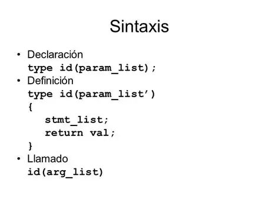Es el proceso de identificar, analizar y corregir errores (conocidos como "bugs" o fallas).
Conjunto de instrucciones escritas en un lenguaje de programación (como Python, Java) por un programador.
Error, defecto o falla que provoca un comportamiento inesperado o incorrecto en un programa o sistema informático.
Es la acción de mover un bloque de texto o código hacia la derecha desde el margen izquierdo, facilitando la comprensión de la estructura y el flujo de control.
Los procesadores de lenguaje son sistemas que interpretan, transforman o generan texto y lenguaje humano o de programación, y se clasifican según la tecnología en procesamiento de lenguaje natural, compiladores / intérpretes y modelos de lenguaje basados en inteligencia artificial.
Un token es una representación digital de un activo o utilidad concreta. Este activo puede ser cualquier cosa, desde moneda digital hasta derechos de propiedad sobre algo o acceso a servicios. Incluso una identidad digital concreta.
Actúan como las directrices que guían el flujo del programa. Son las declaraciones que permiten que el software tome decisiones dinámicas en función de la evaluación de expresiones lógicas.
El bit es la unidad digital más pequeña que puede manejar una computadora y representa la mínima cantidad de información posible en informática. En la mayoría de las computadoras se utiliza el sistema binario, por lo que un bit puede tener uno de dos estados: 0 o 1. Estos valores suelen interpretarse como apagado/encendido, falso/verdadero o bajo/alto, dependiendo del contexto.
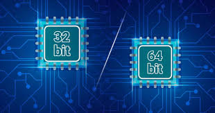Un paquete de software que agrupa todo lo necesario para que una aplicación se ejecute, incluyendo código, dependencias y configuraciones.
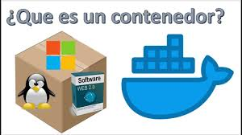Es un sistema de directorio desarrollado por Microsoft para la administración de recursos de red. Se utiliza para almacenar y gestionar la información sobre usuarios, equipos y otros objetos en una red. Esta información se organiza en árboles y se puede acceder a ella desde cualquier lugar de la red. Active Directory permite a los administradores controlar el acceso a los recursos, así como gestionar la seguridad y las políticas dentro de la red.
Access Control List. Lista de Control de Acceso. Un ACL es una lista que especifica los permisos de los usuarios sobre un archivo, carpeta u otro objeto.
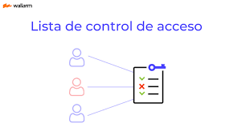Advanced Configuration and Power Interface. Especificación de administración de recursos de energía, que permite que el sistema operativo controle la cantidad de energía distribuida a distintos periféricos.
Un software desarrollado por Microsoft y lanzado al mercado en 1997, que permite que programas o contenido sean ejecutados o distribuidos en computadoras con Windows por medio del World Wide Web.
Adobe Systems Incorporated es una empresa de software, fundada en 1982 por John Warnock y Charles Geschke cuando salieron de Xerox PARC. Son los creadores de PDF y de programas como Photoshop, Illustrator, Acrobat, entre otros. Sitio web: www.adobe.com.
Es el sistema de Google de publicidad en la red de Internet. Los anuncios en este glosario provienen de AdSense.
Línea de Suscripción Asimétrica Digital. Tecnología que mejora el ancho de banda de los hilos del cableado telefónico convencional y transporta hasta 16 Mbps (megabits por segundo) gracias a una serie de métodos de compresión.
Accelerated Graphics Port. Es una especificación de bus que proporciona una conexión directa entre el adaptador de gráficos y la memoria.
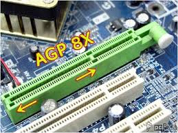Del inglés Audio Interchange File Format (Formato de Archivo de Audio Intercambiable), formato de archivos de audio codesarrollado por Apple Computer. Se utiliza para almacenar muestreos de alta calidad de audio.
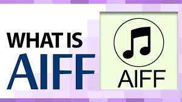Asynchronous JavaScript and XML. Es una técnica de desarrollo web para crear aplicaciones web interactivas.
Alexa es el nombre que Amazon le ha dado a su asistente digital, que permite mediante la voz pedir información sobre algo en particular, así como encender la TV y las luces, entre otros. Compite con Siri y Google Assistant.
Define el conjunto de instrucciones que sirven para ejecutar una tarea o resolver un problema. Los motores de búsqueda usan algoritmos para mostrar los resultados de las búsquedas.
La memoria proporciona al procesador almacenamiento temporal para programas y datos. Todos los programas y datos deben transferirse a la memoria desde un dispositivo de entrada o desde el almacenamiento secundario (CD, DVD, etc.) antes de que los programas puedan ejecutarse o procesarse los datos.
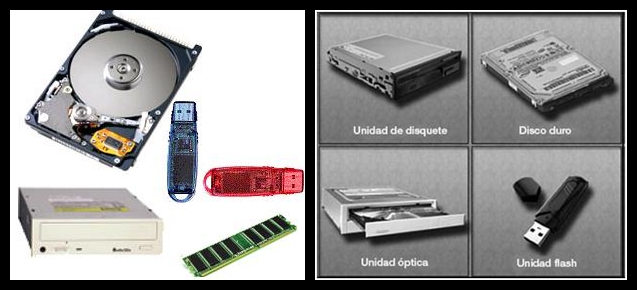El almacenamiento secundario es un medio de almacenamiento definitivo (no volátil, como el de la memoria RAM), por ejemplo, DVD o CD.
AlmaLinux es una distribución gratuita y de código abierto basada en la fuente de Red Hat Enterprise Linux (RHEL). Surgió como una respuesta a los cambios en el modelo de soporte de CentOS, ofreciendo una alternativa estable y respaldada por la comunidad para entornos de servidor y de empresa.
Supertienda de comercio electrónico de Estados Unidos donde se puede comprar básicamente de todo, aunque en sus inicios solo vendía libros en línea. Amazon es uno de los pioneros del comercio electrónico en el mundo.
Estudio de los activos, sus vulnerabilidades y las probabilidades de materialización de amenazas, con el propósito de determinar la exposición al riesgo de cada activo ante cada amenaza.
En inglés, cantidad de bits que pueden viajar por un medio físico (cable coaxial, par trenzado, fibra óptica, etc.), de forma que, mientras mayor sea el ancho de banda, más rápido se obtendrá la información. Es el parámetro que define la cantidad de datos que puede ser enviada en un periodo de tiempo determinado a través de un canal de comunicación.
Es una plataforma abierta para teléfonos móviles que fue desarrollada por Google y por la Open Handset Alliance. Google define a Android como un conjunto de programas (software stack) para teléfonos móviles.
American National Standards Institute. Instituto Nacional de Normas de Estados Unidos.
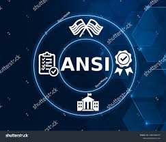Norma definida por el ANSI para medir el brillo de un monitor. La medida representa el valor medio de nueve puntos en la imagen proyectada en la pantalla.
El término antispam (o anti-spam) se refiere a cualquier software, hardware o proceso que se utiliza para combatir la proliferación de correo no deseado o para evitar que el spam ingrese a un sistema.
Programa cuya finalidad es prevenir los virus informáticos, así como eliminar los ya existentes en un sistema. Estos programas deben actualizarse periódicamente.
El servidor Apache es una aplicación de servidor web que ofrece contenido como páginas HTML, multimedia y hojas de estilo CSS a través de Internet. Este glosario corre en Apache Web Server.
Del inglés Application Programming Interface (Interfaz de Programación de Aplicaciones). Es una serie de rutinas usadas por una aplicación para gestionar servicios de bajo nivel, generalmente realizados por el sistema operativo de la computadora.
Programa que corre en un sistema operativo y que realiza una función específica para un usuario. Por ejemplo, procesadores de palabras, bases de datos, agendas electrónicas, etc.
Empresa fundada en 1976 por Steve Wozniak y Steve Jobs, pionera en tecnología, que cuenta con una extensa línea de productos como computadoras de escritorio y laptops (ej. MacBook Pro, MacBook Air), reproductores de MP3 (ej. iPod Touch, iPod Nano), tabletas (iPad), tiendas de software (App Store) y música en línea (iTunes), entre otros.
Pequeña aplicación escrita en Java que se difunde a través de la red con el fin de ejecutarse en el navegador del cliente.
Archivo es el equivalente a "file" en inglés. Es información que ha sido codificada para ser manipulada por una computadora. Los archivos de computadora pueden guardarse en CD-ROM, DVD, disco duro o cualquier otro medio de almacenamiento.
American Registry for Internet Numbers. Organización en Estados Unidos que gestiona las direcciones IP del país y sus territorios asignados. Dado que las direcciones en Internet deben ser únicas y los espacios de direcciones son limitados, es necesaria una organización que controle y asigne los bloques numéricos.
Advanced Research Projects Agency Network. Precursor del Internet desarrollado a finales de los 60's y principios de los 70's por el Departamento de Defensa de los Estados Unidos como un experimento de una red de área, no centralizada y amplia y que resista una guerra nuclear.
La Arquitectura de Información se encarga de efectuar la planificación estratégica previa a la creación de un website.
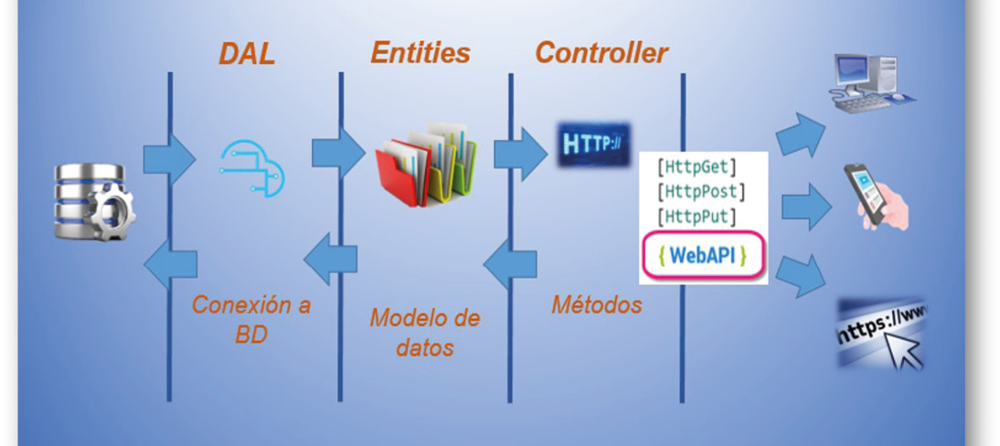American Standard Code for Information Interchange, es un estándar para el código utilizado por computadoras para representar todas las letras mayúsculas, minúsculas, letras latinas, números, signos de puntuación, etc.
Advanced Streaming Format: Este formato de archivos almacena información de audio y video, y fue especialmente diseñado para trabajar en redes, como Internet. La información se descarga como un flujo continuo de datos, y no es necesario esperar la descarga completa para reproducirlo.
Acrónimo en inglés de Active Server Pages. Páginas de Servidor Activo. Son un tipo de HTML que, además de contener los códigos y etiquetas tradicionales, cuenta con programas (o scripts) que se ejecutan en un servidor Microsoft Internet Information Server antes de que se desplieguen en la pantalla del usuario.
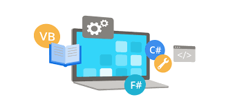Advanced Technology Attachment. Interfaz para conectar discos duros, CD-ROMs, etc. También conocido como IDE.
Acrónimo en inglés de Asynchronous Transfer Mode. Modo de Transferencia Asincrónica. Es una tecnología de redes de alta velocidad que transmite múltiples tipos de información (voz, vídeo, datos) mediante la creación de "paquetes de datos".
Un protocolo para la sindicación y compartición de contenido. Atom se desarrolla como un sucesor mejorado de RSS y será más complejo que este. Brinda soporte para firmas digitales, ubicación geográfica del autor y posiblemente seguridad, encriptación y licencias, etc. Como RSS, Atom es una especificación basada en XML.
En ambientes virtuales multiusuarios de Internet y en juegos, el avatar es la representación gráfica del usuario.
La parte de la red que transporta el tráfico más denso: conecta LANs, ya sea dentro de un edificio o a través de una ciudad o región.
Copia de respaldo o seguridad. Acción de copiar archivos o datos de forma que estén disponibles en caso de pérdida de los originales. Esta sencilla acción evita numerosos e irremediables problemas si se realiza de forma habitual y periódica.
Backup remoto es hacer respaldo de los datos de una computadora o servidor en otra ubicación física.
En software, "bandwidth" (ancho de banda) se refiere a la capacidad máxima de datos que una conexión de red puede transferir en un período de tiempo específico, o bien a la capacidad que un servicio o aplicación necesita para funcionar correctamente.
Imagen, gráfico o texto con fines publicitarios que habitualmente enlaza con el sitio web del anunciante.
Una base de datos es una estructura de datos que almacena información organizada.
Del inglés Bulletin Board System, es un servicio de intercambio de información entre usuarios, descarga de archivos, emails, etc. Por lo general los BBS son basados en texto o gráficos ANSI limitados. Hoy en día los BBS no se usan como antes, pero en los años 80 y principios de los 90 dominaban.
Es el proceso formal de solicitar información y comentarios sobre los resultados del software todavía en programación. Es la segunda parte de las pruebas que se realizan del software por los usuarios finales.
Buscador (motor de búsqueda) de la empresa Microsoft. www.bing.com
Binario Hexadecimal. Método utilizado para convertir archivos no ASCII o binarios al formato de 7 bits ASCII. Este método es utilizado principalmente por computadoras Macintosh y es necesario porque el correo en Internet solo puede utilizar archivos ASCII.
La biometría es una tecnología basada en el reconocimiento de una característica de seguridad física e intransferible de las personas, como por ejemplo la huella dactilar.
Del inglés "Basic Input/Output System" (Sistema Básico de Entrada/Salida). El BIOS es un programa preinstalado en computadoras basadas en Windows (no en las Macs), que la computadora usa para iniciar.
Con el incremento del rendimiento de las computadoras, las medidas tradicionales pierden relevancia. El MIPS (Millones de Instrucciones por Segundo) ha sido sustituido por el BIPS (Miles de Millones de Instrucciones por Segundo), una medida aproximada de la capacidad de proceso de un sistema.
Bitcoin es una moneda digital o criptomoneda que opera sin control central o supervisión de bancos o gobiernos. En su lugar, se basa en software y criptografía peer-to-peer usando la tecnología blockchain.
Corto en inglés para "Because It's Time NETwork". Red internacional para educación basada en el protocolo IBM Network Job Entry. Bitnet-II encapsula el protocolo Bitnet en paquetes IP y depende de Internet para enviarlos a su destino.
Término utilizado al hablar de calidades de video y audio. Define cuánto (o el promedio) de espacio físico (en bits) toma un segundo de audio o video.
Protocolo peer-to-peer para la transferencia de archivos, creado por el programador Bram Cohen.
Dispositivo muy famoso a inicios de los años 2000, que tenía email push, telefonía móvil, SMS, navegación web y otros servicios, como su propio sistema cerrado de chat: BBMessenger.
Blockchain es una tecnología que permite distribuir y sincronizar datos en forma de "bloques y cadena" (block & chain) entre diferentes actores descentralizados, usando criptografía para asegurar los datos y garantizar que cualquier manipulación sea evidente. Su atractivo principal es la seguridad.
Versión reducida del término "web log". Es información que un usuario publica de forma fácil e instantánea en un sitio web. Generalmente un blog se lee en orden cronológico.
En inglés, Blogosphere. Es el término para referirse a la suma de todos los blogs y sitios web relacionados con blogs.
Formato de disco óptico parecido al CD y DVD. Fue desarrollado para grabar y reproducir video en alta definición y almacenar grandes cantidades de datos.
Estándar de transmisión de datos inalámbrico por radiofrecuencia de corto alcance (unos 10 metros). Permite la comunicación entre videocámaras, celulares y computadoras para el intercambio de datos digitalizados (video, audio, texto).
Bit Map (mapa de bits). Formato de archivos gráficos de Windows. Es preferible usar JPG, PNG o GIF antes que BMP, ya que los archivos bitmap suelen ser más grandes en tamaño (bytes) que los otros formatos mencionados.
Un bookmark en software es una forma de guardar y acceder rápidamente a una ubicación específica dentro de un documento, página web o aplicación. También puede referirse a una herramienta de inteligencia artificial para crear sitios web, un asistente de diseño o un método para documentar y marcar código.
Lógica que las computadoras usan para determinar si una declaración es falsa o verdadera.
En términos sencillos, boot significa encender la computadora.
Proviene de la palabra "robot".
Bits por segundo. Velocidad a la que se transmiten los bits en un medio de comunicación.
En redes de computadoras, un bridge (puente) conecta dos o más redes de área local (LAN) o WLAN entre sí.
Volumen de luz emitido por un monitor o dispositivo de proyección. El brillo de un proyector se mide en lúmenes ANSI.
Se refiere a conexiones a Internet con mayor ancho de banda que un módem de marcado convencional. No hay una especificación exacta de velocidad, pero normalmente incluye Cable Módem, DSL o ADSL.
Un navegador (browser) web es un software que permite al usuario localizar, acceder y mostrar páginas web. Ejemplos: Microsoft Edge, Firefox, Chrome, Safari y Opera.
El buffer contiene datos almacenados temporalmente, generalmente en la RAM de la computadora. Su propósito es guardar información antes de ser utilizada.
Es un microprocesador, ASIC o tarjeta de expansión diseñado para descargar una tarea específica de la CPU, que a menudo contiene hardware de función fija. Un ejemplo común es una unidad de procesamiento gráfico.
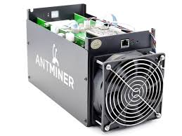En una computadora, el bus es la ruta de datos en la tarjeta madre que interconecta el microprocesador con extensiones conectadas, como discos duros, unidades ópticas o tarjetas de video.
Los buscadores (o motores de búsqueda) están diseñados para facilitar la localización de sitios o páginas web. Existen dos tipos: los spiders (o arañas), como Google, y los directorios, como Yahoo.
Conjunto de 8 bits, que suele representar un valor asignado a un carácter.
Lenguaje de programación de propósito general que se utiliza para desarrollar sistemas operativos, navegadores, juegos, entre otros. Admite diferentes paradigmas, como la programación orientada a objetos y la funcional. Es potente y flexible.
Dispositivo que permite conectar la computadora a una línea local de TV por cable a altas velocidades.
Columna vertebral de una red que utiliza un medio físico de cable, casi siempre en redes LAN, permitiendo la transmisión de información entre nodos.
(Pendiente de definición)
Siglas en inglés de Completely Automated Public Turing test to tell Computers and Humans Apart. Es una pequeña prueba que ayuda a determinar si un usuario es una computadora o un humano.
Espacio del disco duro de una computadora cuya estructura jerárquica en forma de árbol contiene la información almacenada, habitualmente en archivos, y es identificado mediante un nombre (ej. "Mis documentos").
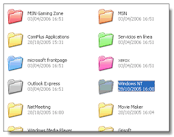Operadores de telecomunicaciones propietarios de las redes troncales de Internet y responsables del transporte de los datos. Proporcionan una conexión a Internet de alto nivel.
Shopping Cart. Área de un sitio web de comercio electrónico donde el usuario va colocando los objetos o servicios a medida que los va seleccionando, de la misma manera que en un supermercado. Al final, el usuario decide cuáles de ellos comprar.
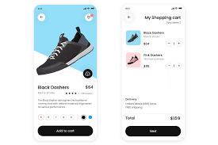Constant Bitrate (Bitrate Constante): término que describe cómo es codificado el audio y el video, en donde el bitrate no varía a lo largo del clip.
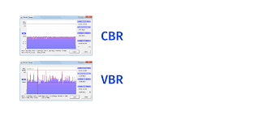Compact Disc. Disco óptico de 12 cm de diámetro para almacenamiento binario. Su capacidad es de aproximadamente 750 MB y puede usarse para almacenar cualquier tipo de datos.
Los discos CD-R y CD+R permiten grabar datos una sola vez (aproximadamente 750 MB). Los datos grabados no pueden ser borrados.
Compact Disc Read Only Memory. Medio de almacenamiento de sólo lectura.
Compact Disc ReWritable. Disco compacto regrabable que permite grabar y borrar información hasta 1,000 veces.
CentOS (Community ENTerprise Operating System) es una distribución de Linux basada en el código fuente de Red Hat Enterprise Linux (RHEL). Es conocida por su estabilidad, seguridad y soporte a largo plazo, lo que la hace ideal para servidores.
Conseil Européen pour la Recherche Nucléaire. Laboratorio Europeo de Física de Partículas, en Ginebra, Suiza. Fue donde nació la World Wide Web en 1991, basada en la propuesta de Tim Berners-Lee.
Acreditación emitida por una entidad debidamente autorizada que garantiza que un determinado dato (una firma electrónica o una clave pública) pertenece realmente a quien se supone. Ejemplo: Verisign, Thawte, Digicert.
Color Graphics Adapter. Una de las primeras tarjetas gráficas existentes para IBM y compatibles. Permitía resoluciones de 320x200 puntos con 4 colores y de 640x200 puntos en 2 colores. Hoy en día ya no se usan.
La inteligencia artificial general (AGI) sería la capacidad de una máquina de “sentir, pensar y actuar” como lo haría una persona. La AGI no existe actualmente. El siguiente nivel sería la superinteligencia artificial (ASI), que superaría la capacidad humana en todos los aspectos.
La inteligencia artificial estrecha (ANI), también conocida como inteligencia artificial débil, es un tipo de IA que se especializa en realizar una tarea o un conjunto limitado de tareas específicas, sin capacidad general.
El deep learning —o aprendizaje profundo— es una rama avanzada del aprendizaje automático que permite a las máquinas analizar datos jerárquicamente para resolver tareas complejas como el reconocimiento de voz, visión por computadora o procesamiento de lenguaje natural.
Tipo de aprendizaje automático (IA) que utiliza conjuntos de datos etiquetados para entrenar algoritmos capaces de realizar predicciones o clasificaciones basadas en ejemplos conocidos.
Tipo de aprendizaje automático que analiza conjuntos de datos sin etiquetar para identificar patrones o grupos de manera autónoma, sin intervención humana directa.
El aprendizaje por refuerzo (RL) es una técnica de machine learning que entrena a un software para tomar decisiones y lograr los mejores resultados mediante un proceso de prueba y error.
Una red neuronal convolucional (CNN o ConvNet) es una arquitectura de deep learning que aprende directamente a partir de datos y es útil para identificar patrones en imágenes, objetos o clases.
Una red neuronal recurrente (RNN) es una red neuronal profunda diseñada para procesar datos secuenciales, como texto o series temporales, y generar predicciones basadas en la secuencia previa.
Mercadeo o marketing realizado a través de Internet.
Término acuñado por Norbert Wiener y popularizado por su libro "Cybernetics or Control and Communication in the Animal and the Machine" (1948).
Un circuito integrado es un pequeño chip que puede funcionar como amplificador, oscilador, microprocesador o incluso memoria de computadora.
Acción de oprimir alguno de los botones del mouse. El término “click” se usa para indicar que el usuario debe presionar un botón sobre un área de la pantalla. También se escribe “clic” en español.
Unidad de medida bruta de la eficacia de un banner publicitario, obtenida al calcular todas las entradas a un sitio web como resultado de hacer click en el citado banner.
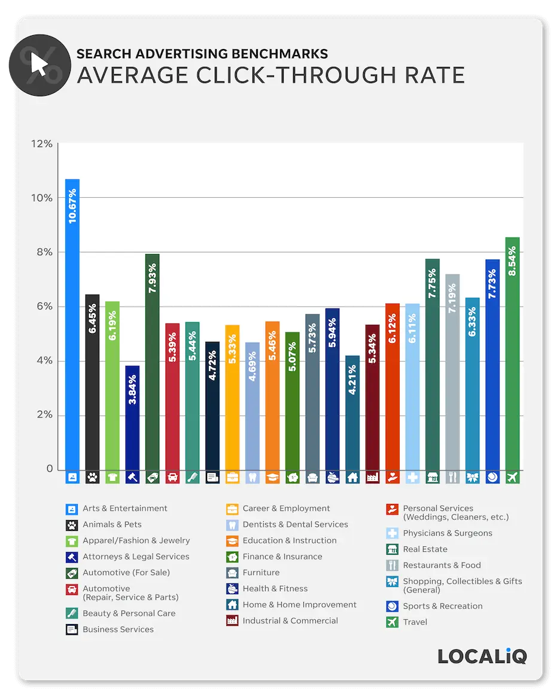Aplicación que permite a un usuario obtener un servicio de un servidor en la red. Es el sistema o proceso que solicita a otro sistema la prestación de un servicio.
Siglas del inglés Content Management System. Sistema de administración de contenidos que permite crear y editar fácilmente páginas, noticias u otros elementos en un sitio web.
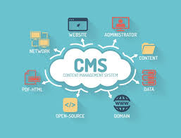Siglas en inglés para Cyan, Magenta, Yellow, Black. Es un modelo de color usado en impresión para combinar los colores primarios y producir imágenes a todo color.
Cocoa es un entorno de aplicaciones tanto para el sistema operativo macOS como para iOS, utilizado en dispositivos como iPhone, iPad e iPod touch. Consiste en un conjunto de bibliotecas de software orientadas a objetos, un sistema en tiempo de ejecución y un entorno de desarrollo integrado.
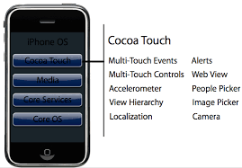Corto para “comprimir/descomprimir”. Un códec es cualquier tecnología usada para comprimir y descomprimir datos. Los códecs pueden implementarse en software, hardware o en una combinación de ambos.
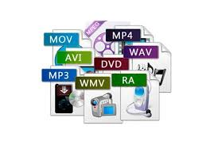Conjunto de instrucciones que componen un programa, escritas en cualquier lenguaje de programación. En inglés: “source code”.
Se refiere a la práctica de alojar servidores propios en espacios alquilados dentro de centros de datos (data centers).
En inglés e-commerce. Es la compra y venta de bienes y servicios a través de Internet, generalmente mediante plataformas y protocolos de seguridad estandarizados.
Ciencia que estudia el procesamiento automático de datos o información mediante el uso de computadoras.
Dispositivo electrónico capaz de procesar información y ejecutar instrucciones de programas. Una computadora (Latinoamérica) u ordenador (España) puede realizar operaciones de entrada, salida, cálculo y lógica.
Operación realizada en una computadora remota a través de una red, como si se tratara de una conexión local.
Situación que ocurre cuando el tráfico de datos excede la capacidad de una ruta o enlace de comunicación.
Método de transmisión en el que los datos se dividen en paquetes independientes. Cada paquete contiene la dirección de origen, la de destino y la información necesaria para unirse nuevamente en el receptor.
Código utilizado para acceder a un sistema restringido. Puede contener caracteres alfanuméricos y símbolos. Normalmente no es visible al escribirla, para garantizar su confidencialidad.
Pequeño fragmento de datos enviado por un servidor web al navegador del usuario, que se almacena localmente en su equipo. Se usa para recordar información sobre la sesión o preferencias del usuario.
Fórmula opuesta al copyright, nacida en el ámbito del software libre. Permite que un programa sea de dominio público y que su código fuente pueda usarse y modificarse libremente.
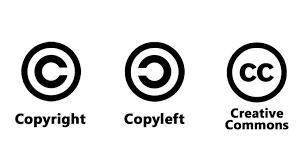Derecho de autor. Derecho legal que protege las obras intelectuales, permitiendo a su autor decidir cómo serán reproducidas, distribuidas o modificadas.
Siglas de Central Processing Unit (Unidad Central de Procesamiento). Es el componente principal de una computadora encargado de ejecutar instrucciones y controlar las operaciones del sistema.
Persona que intenta acceder a un sistema informático sin autorización, generalmente con la intención de causar daños o obtener beneficios ilícitos.
Conjunto de técnicas que permiten cifrar información para protegerla, de modo que solo quienes poseen una clave puedan leerla o modificarla.
Moneda digital o virtual protegida mediante criptografía, lo que dificulta su falsificación. Se usa como medio de intercambio y posee su propio valor en el mercado.
Siglas de Customer Relationship Management (Gestión de la Relación con el Cliente). Sistema que recopila y gestiona información sobre clientes con el objetivo de mejorar la atención y personalización del servicio.
Siglas de Cathode Ray Tube (Tubo de Rayos Catódicos). Tecnología de visualización utilizada en monitores y televisores antiguos, reemplazada por pantallas LCD, LED y plasma.
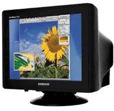Siglas de Compressed Serial Line Internet Protocol. Protocolo de línea serie comprimido, versión mejorada de SLIP, desarrollado por Van Jacobson. Envía solo las diferencias en lugar de las cabeceras completas de los paquetes.
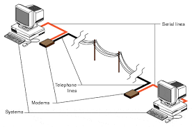Siglas de Cascading Style Sheets (Hojas de Estilo en Cascada). Conjunto de reglas que definen la apariencia y el formato de documentos HTML, permitiendo uniformizar el diseño de sitios web.
Siglas de Comma Separated Values (Valores Separados por Comas). Formato de archivo de texto simple donde cada línea representa un registro y las columnas están separadas por comas.
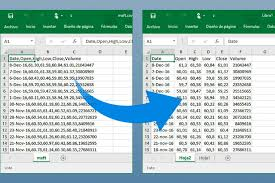Práctica de acosar o molestar a una persona mediante medios digitales, como correos electrónicos, mensajes, redes sociales o sitios web.
Persona o empresa que registra nombres de dominio relacionados con marcas o empresas reconocidas, con el propósito de revenderlos a un precio elevado.
Formato de video digital que cumple los estándares de emisión televisiva. Permite la transmisión de contenidos digitales a través de distintos sistemas de televisión.
Aplicación de tipo UNIX que permanece en ejecución en segundo plano en un servidor, lista para realizar tareas como enviar correos electrónicos, servir páginas web o ejecutar procesos automáticos.
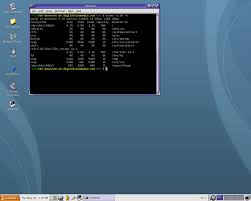Término genérico que designa cualquier tipo de información digital que entra, sale o se almacena en un sistema informático.
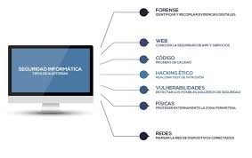Instalación diseñada para alojar grandes cantidades de servidores y equipos de comunicación, con condiciones controladas de energía, temperatura, conectividad y seguridad.
Siglas de Database Management System (Sistema Gestor de Bases de Datos). Conjunto de programas que permiten crear, administrar y manipular bases de datos de forma estructurada.
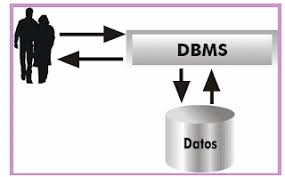(Servicio Denegado Distribuido). Es un ataque con una multitud de sistemas que han sido "hackeados" dirigido a un objetivo en particular. La cantidad excesiva de datos "ahoga" el sistema atacado y lo tumba, causando un DoS.
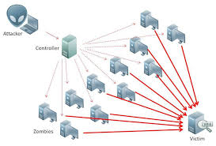Siglas del inglés "Double Data Rate". Es una versión avanzada del SDRAM, un tipo de memoria de computadora.
De las siglas del inglés "Double Data Rate 2". El RAM DDR2 es una versión mejorada de la memoria DDR, siendo más rápida y eficiente.
Es una distribución de Linux que está totalmente compuesta de software gratuito y de código abierto.
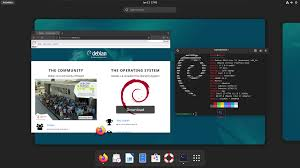Los programadores también cometen errores, así que después de hacer un programa, el programador debe probarlo para ver si encuentra "bugs" en el sistema; de ahí el término "debug".
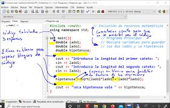Estándar de Cifrado de Datos. Algoritmo de cifrado de datos que utiliza bloques de datos de 64 bits y una clave de 56 bits. Ha sido estandarizado por la administración de EE.UU.
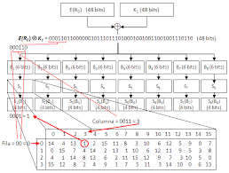Web developer. Persona o empresa responsable de la programación de un sitio web, incluyendo, si se da el caso, plataformas de comercio electrónico.
Acción de desempaquetar uno o más archivos que anteriormente han sido empaquetados, y habitualmente también comprimidos, en un solo archivo, con el objeto de que ocupen menos espacio en disco y se precise menos tiempo para enviarlos por la red.
Descifrado. Recuperación del contenido real de una información previamente encriptada o cifrada.
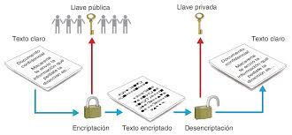Desfragmentar un disco duro es el proceso en el cual se reorganiza la data del disco duro para que esté de una manera más eficiente; por lo tanto, el disco duro funciona más rápido y mejor.
Un intercambio descentralizado (o DEX) es un mercado P2P (peer to peer) donde las transacciones de criptomonedas ocurren directamente entre los usuarios sin un intermediario.
Siglas del inglés "Dynamic Host Configuration Protocol". Protocolo Dinámico de Configuración del Host. Un servidor de red usa este protocolo para asignar de forma dinámica las direcciones IP a las diferentes computadoras de la red.
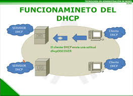Dynamic HTML. HTML dinámico. Una extensión de HTML que permite, entre otras cosas, la inclusión de pequeñas animaciones y menús dinámicos en páginas web.
La digitalización de documentos es el acto de digitalizar, por medio de escáneres u otros dispositivos, documentos, convirtiéndolos en formatos como JPG, PDF, TIFF, etc.
El Directorio Activo es un servicio de directorio patentado por Microsoft, integrado en la arquitectura de Windows 2000 Server y versiones posteriores.
Las páginas que se incluyen en la base de datos del directorio son previamente revisadas por humanos. No se agrega la página completa, sino únicamente algunos datos tales como el título, la URL y un breve comentario redactado especialmente que explique el contenido. Un ejemplo es www.yahoo.com.
Un disco de estado sólido (SSD en inglés, Solid State Drive) es un grupo de memoria superconductora organizada como un disco duro, y usa circuitos integrados en vez de magnéticos u ópticos.
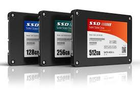Disco de metal cubierto con una superficie de grabación magnética. Los lados planos de la placa son la superficie de grabación, el brazo acústico es el brazo de acceso y la púa es la cabeza lectora/grabadora. Los discos magnéticos pueden ser grabados, borrados y regrabados.
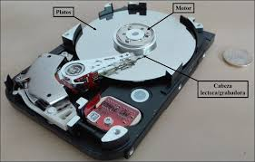Discogs es una base de datos en línea y una comunidad de música que se centra en la recopilación de información sobre discos de vinilo, CD, casetes y otros formatos de música.
Discord es una plataforma de comunicaciones enfocada en los "gamers". Permite chatear entre usuarios, ya sea uno a uno o en grupo, a través de un servidor.
Método para simular muchos colores o sombras de gris con pocos colores. Un número limitado de píxeles del mismo color, localizados cerca uno del otro, es visto como un nuevo color.
Formato de compresión de video basado en tecnología MPEG-4. Los archivos DivX pueden descargarse en líneas de alta velocidad sin sacrificar mucho la calidad del video digital.
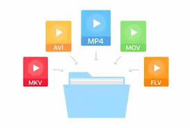Archivo del sistema operativo Windows que actúa como un mini-programa ejecutable, enlazando el disco duro con los programas cuando son cargados.
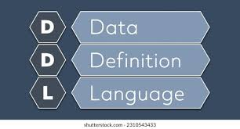Siglas del inglés Digital Light Processing (Procesamiento de Luz Digital). Tecnología de monitor de reflexión desarrollada por Texas Instruments, que emplea pequeños espejos controlados digitalmente.
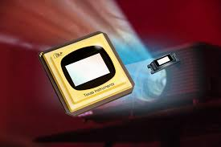El sistema de nombres de dominio (DNS) es la guía telefónica de Internet. Los humanos acceden a la información en línea a través de nombres de dominio, como internetglosario.com o espn.com.
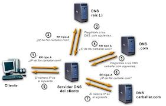(Modelo de Objetos de Documento). Es una API para documentos HTML y XML.
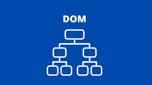Sistema de denominación de hosts en Internet, formado por un conjunto de caracteres que identifican un sitio de la red accesible por un usuario.
Denial Of Service (DoS), denegación de servicio, incidente en el cual un usuario o una organización se ven privados de un recurso que normalmente podrían usar.
Descarga. Proceso en el cual información es transferida desde un servidor a una computadora personal.
Utilitario de software diseñado para decirle a la computadora cómo operar los aparatos externos o periféricos.
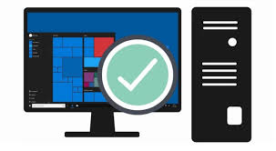DTS, Inc. (originalmente Digital Theater Systems) es una empresa estadounidense que fabrica tecnologías de audio multicanal para películas y videos.
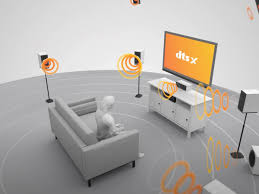DuckDuckGo se describe a sí mismo como "el motor de búsqueda que no te rastrea". No usa cookies ni recopila información personal de los usuarios.
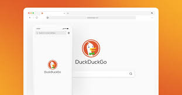En comunicaciones, se refiere a la capacidad de un dispositivo para recibir y transmitir información. Existen dos modalidades: HALF-DUPLEX (alternadamente) y FULL-DUPLEX (simultáneamente).
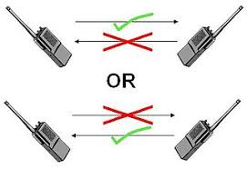Digital Versatile Disc (Disco Versátil Digital). Soporte para almacenamiento de datos binarios de igual tamaño que el CD-ROM, pero con mayor densidad de grabación y capacidad.
Siglas del inglés Digital Video Recorder (Grabadora Digital de Video). Es un aparato que graba video o TV en formato digital directamente en un disco duro en tiempo real.
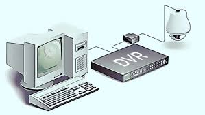Acrónimo del inglés "For your information" (para su información), usado generalmente por email o chat (aunque trasciende del Internet), para agilizar la conversación.
Un "gamer" es un jugador devoto de juegos electrónicos, especialmente en máquinas especialmente diseñadas para tales juegos y, en una tendencia más reciente, en Internet.
Un gateway es un punto de red que actúa como entrada a otra red. En el internet, un nodo o "parada" puede ser un "nodo gateway" o un "nodo host".
Siglas del inglés Graphics Interchange Format, es un tipo de archivo binario que contiene imágenes comprimidas.
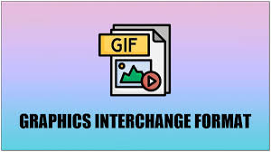El gigabyte (GB) equivale a 1.024 millones de bytes, o 1024 Megabytes. Se usa comúnmente para describir el espacio disponible en un medio de almacenamiento. Hay 1024 Gigabytes en un Terabyte.
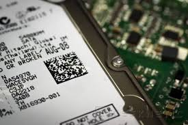Un gigahertz equivale a 1,000 megahertz (MHz) o 1,000,000,000 Hz. Es comúnmente usado para medir las velocidades de los procesadores de las computadoras.
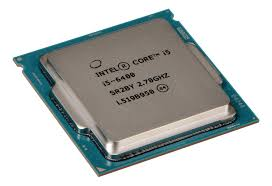Gmail es el servicio de email (correo electrónico) gratis, de Google. https://www.gmail.com
La letras GNU se refieren en inglés a No es UNIX (Not UNIX); es un sistema de programas compatible con UNIX, desarrollado por el Free Software Foundation (FSF).
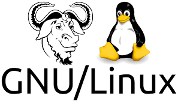Sistema mediante el cual los usuarios pueden intercambiar archivos a través de Internet directamente y sin tener que pasar por un sitio web, mediante una técnica denominada peer-to-peer (P2P)
Buscador de páginas web en Internet (y el más popular por el momento). Introduce páginas web en su base de datos por medio de robots (a los robots de google se le conocen como googlebots). Sitio web: www.google.com
Google Ads (anteriormente Google AdWords) es una plataforma de publicidad en línea desarrollada por Google, donde los anunciantes realizan ofertas para mostrar anuncios breves, ofertas de servicios, listas de productos o videos a los usuarios de la web.
Google Assistant es el nombre que Google le ha dado a su asistente digital, que interactúa con Google Home, el sistema de automatización para casas. Es competencia de Siri y Alexa.
Gopher es un protocolo de capa de aplicación que brinda la capacidad de extraer y ver documentos web almacenados en servidores web remotos.
Acrónimo en inglés de General Public License (Licencia Pública General). Esta licencia regula los derechos de autor de los programas de software libre (free software) promovido por el Free Software Foundation (FSF) en el marco de la iniciativa GNU.
Global Positioning System. Sistema de localización geográfica vía satélite capaz de dar la localización de una persona u objeto dotado de un transmisor-receptor GPS con una precisión mínima de 10 metros.
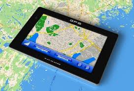Sistema Global para Comunicaciones Móviles. Sistema compatible de telefonía móvil digital desarrollado en Europa con la colaboración de operadores, Administraciones Públicas y empresas.
Acción de grabar en el disco duro los archivos que se encuentran en la memoria. Algunos programas guardan los datos automáticamente, mientras que otros requieren que el usuario grabe los datos antes de finalizar la sesión de trabajo.
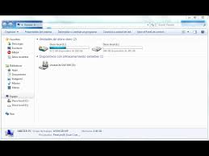Interfaz Gráfica de Usuario (por sus siglas en inglés, Graphical User Interface). Es una interfaz visual que permite a los usuarios interactuar con un programa o sistema operativo mediante elementos gráficos como botones, iconos y menús, en lugar de usar comandos de texto
Programa informático que se autoduplica y autopropaga. En contraste con los virus, los gusanos suelen estar especialmente escritos para redes.
Gwei es una pequeña unidad de la criptomoneda Ether (ETH) de la red Ethereum.
High bit-rate Digital Subscriber Line. Línea Digital de Subscriptor de Alta Velocidad. Sistema de transmisión de datos de alta velocidad que utiliza dos pares de cables trenzados. Es simétrico, lo que quiere decir que tiene el mismo ancho de banda de subida que de bajada.

que tiene un conocimiento profundo acerca del funcionamiento de redes de forma que puede advertir los errores y fallas de seguridad del mismo. Al igual que un cracker busca acceder por diversas vías a los sistemas informáticos pero con fines de protagonismo.
Hacking ético es una forma de referirse al acto de una persona usar sus conocimientos de informática y seguridad para realizar pruebas en redes y encontrar vulnerabilidades, para luego reportarlas y que se tomen medidas, sin hacer daño.
(Apretón de Manos) Protocolo de comienzo de comunicación entre dos máquinas o sistemas.

Componentes físicos de una computadora o de una red (a diferencia de los programas o elementos lógicos que los hacen funcionar).
Acrónimo del ingles "High-Definition Multimedia Interface" (Interfaz Multimedia de Alta Definición). Es una interfaz digital para transmitir data de audio y video en un mismo cable. La mayoría de los HDTV, DVD, Blu-ray, cajas de cable y consolas de juegos tienen soporte para HDMI.

Del inglés "High Definition Television." (Televisión de Alta Definición). Es un estándar de alta calidad de video desarrollado para reemplazar formatos de video anteriores llamado SDT (Standard Definitivion Television, Televisión de Definición Estándar).

Inicial de un paquete que precede a los datos propiamente dichos y que contiene las direcciones del remitente y del destinatario, control de errores y otros campos.

Cualquier documento que contiene vínculos con otros documentos de forma que al seleccionar un vinculo se despliega automáticamente el segundo documento.
Vínculo existente en un documento hipertexto que apunta o enlaza a otro documento que puede ser o no otro documento hipertexto.
una interacción o solicitud de datos que se produce al cargar una página web, como la petición de un navegador a un servidor para obtener un archivo específico, o un registro de datos en un sistema como Google Analytics para rastrear el comportamiento del usuario.
Término utilizado para definir a los falsos rumores, especialmente sobre virus inexistentes difundidos por la red, y hay veces que tienen mucho éxito y causan casi tanto daño como si se tratase de un virus real. Recomendamos revisar cualquier historia que te llegue por email antes de reenviarla, en Snopes.com.
Es un lenguaje que permite definir la presentación de un documento escrito en un lenguaje de marcado, como HTML o XML, separando el contenido de su formato visual 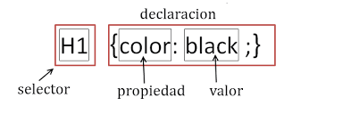
Término utilizado para denominar cada uno de los pasos que es preciso dar en orden de llegar de un punto de origen a otro de destino a lo largo de una red a través de enrutadores.
Servidor que nos provee de la información que requerimos para realizar algún procedimiento desde una aplicación cliente a la que tenemos acceso de diversas formas (ssh, FTP, www, email, etc.). Al igual que cualquier computadora conectada a Internet, debe tener una dirección o número IP y un nombre.
El servicio de Web Hosting consiste en el almacenamiento de datos, aplicaciones o información dentro de servidores diseñados para llevar a cabo esta tarea.
Uno de los más populares sitios que otogran cuentas de email gratis (@hotmail.com), cuenta con millones de usuarios a nivel mundial. Fue comprado por MSN Networks, empresa miembro del grupo Microsoft.
Areas donde hay conexión WiFi accesible.
Siglas del inglés Hypertext Markup Language (Lenguaje de Marcado Hipertexto). Es un lenguaje para crear documentos de hypertexto para uso en el www o intranets
En inglés Hypertext Transfer Protocol. Protocolo de Transferencia de Hipertexto. HTTP es un protocolo con la ligereza y velocidad necesaria para distribuir y manejar sistemas de información hipermedia. HTTP ha sido usado por los servidores World Wide Web desde su inicio en 1993.
Creado por Netscape Communications Corporation para designar documentos que llegan desde un servidor web seguro. Esta seguridad es dada por el protocolo SSL (Secure Socket Layer) basado en la tecnología de encriptación y autenticación desarrollada por RSA Data Security Inc.
El punto central de conexión para un grupo de nodos; útil para la administración centralizada, la capacidad de aislar nodos de problemas y ampliar la cobertura de una LAN.
Corporation for Assigned Names and Numbers (ICANN) es una organización sin fines de lucro que opera a nivel internacional, responsable de asignar espacio de direcciones numéricas de protocolo de Internet (IP).
Internet Control Message Protocol. Protocolo de Control de Mensajes Internet. Es una extensión del IP (Internet Protocol) definida por RFC 792.
Símbolo gráfico que aparece en la pantalla de un ordenador con el fin de representar ya sea una determinada acción a realizar por el usuario (ejecutar un programa, leer una información, imprimir un texto, un documento, un dispositivo, un estado del sistema, etc).
Integrated/Intelligent Drive Electronics. Es una especificación ATA. Es la interface de disco mas común para disco duros, CD ROMS, DVD, etc. Es fácil de usar, pero también tiene muchas limitaciones.
Siglas en ingles para Institute of Electrical and Electronics Engineers, organización profesional internacional sin fines de lucro, para el avance de la tecnología relacionada a la electricidad.
La interfaz IEEE 1394 es un estandar de bus serial para comunicaciones de alta velocidad y transferencia que se usa en computadoras, audio y video digital. La interfaz es conocida como Firewire por Apple y i.Link por Sony.
Acrónimo del ingles "Integrated Graphics Processor" (Procesador Grafico Integrado). Un IGP tiene el mismo propósito que una tarjeta de video, que es procesar las graficas que la computadora despliega. Es un chip integrado a la tarjeta madre de la computadora.
El término "IIS" significa Internet Information Services, que es un servidor web de propósito general que se ejecuta en el sistema operativo Windows.
Mensajería Instantánea (Instant Messaging), que es un software para chatear en tiempo real a través de internet, y a Gestión de la Información (Information Management), un método para procesar, organizar y utilizar información de manera eficiente en una organización.
IMAP es un acrónimo del inglés Internet Message Access Protocol (Protocolo de Acceso a Mensajes de Internet). Diseñado con el fin de permitir la manipulación de cuentas de correo remotos como si fueran locales.
Periférico que pasa la información de una computadora a un medio físico, que usualmente es el papel.
Es la ciencia que estudia y aplica el procesamiento automático de la información mediante sistemas computacionales, lo que incluye el desarrollo, el diseño y la aplicación de hardware y software para realizar diversas funciones. El software, o "mente" de los sistemas, está compuesto por programas y aplicaciones que permiten al hardware, la parte física o "cuerpo" de los dispositivos, procesar y comunicar información de forma eficaz.
Los printers con tecnología Inkjet son los más comunes en el mercado. Funcionan rociando gotas diminutas en una hoja de papel.
Instagram es una plataforma de redes sociales que enfatiza el intercambio de fotos y videos a través de su aplicación móvil. Puede tomar, editar y publicar contenido visual para que sus seguidores interactúen con me gusta, comentarios y acciones compartidas. Es parte de Facebook.

El fabricante de microprocesadores para computadoras lider en el mundo.
La inteligencia artificial (IA) se refiere a la capacidad de una máquina o un sistema informático para realizar tareas que normalmente requieren la inteligencia humana, como la comprensión del lenguaje, el aprendizaje, la resolución de problemas, la toma de decisiones y la percepción.
Una interfaz es un punto de contacto o una conexión entre dos sistemas, dispositivos o personas que permite la comunicación y la interacción entre ellos.
En inglés Graphic User Interface, corto como GUI. Componente de una aplicación informática que el usuario visualiza graficamente, y a través de la cual opera con ella. Está formada por ventanas, botones, menús e iconos, entre otros elementos. Ej, Mac OS, Windows y X window.
son un tipo de arquitectura de aprendizaje profundo que usa dos redes neuronales en competencia para generar datos nuevos. Estas dos redes, el generador y el discriminador, se entrenan entre sí, lo que ayuda a producir un resultado más preciso.
IE era un navegador web de la empresa Microsoft. Fue lanzado al mercado por primera vez en 1995 junto con las distribuciones de Windows. En Windows 10 fue reemplazado por Windows Edge.
Conocido como IoT, "internet of things" se refiere a la conectividad de objetos y cosas comunes con el internet. Por ejemplo un bombillo de luz, una lavadora, nevera, conectadas al internet y que se puedan administrar por apps desde un celular.
Proyecto que trata de crear una nueva Internet de mayores y mejores prestaciones en el ámbito de las universidades norteamericanas.
Viene del ingles "Internet Network Information Center" (Centro de Información de la Red de Internet). InterNIC es una organización creada por la Fundación Nacional de la Ciencia, para proporcionar información de Internet y registro de dominios.
Red privada dentro de una compañía u organización que utiliza el navegador favorito de cada usuario, en su computadora, para ver menus con opciones desde cumpleaños del personal, calendario de citas, mensajería instantánea privada, repositorio de archivos y las normativas de la empresa entre otras.
La dirección IP (Protocolo de Internet) es una dirección de su hardware de red. Ayuda a conectar su computadora a otros dispositivos en su red y en todo el mundo.
Tablet PC de la empresa Apple.
Teléfono móvil "inteligente", creado por la empresa Apple, cuyo sistema operativo es basado en Unix BSD (así como el MAC OS X), y es basicamente una computadora miniatura.
Pequeño aparato creado por Apple, que permite la rápida transferencia de audio y video desde la computadora. Soporta, dependiendo del modelo, gigas de información, permitiendo tener en un solo aparato mas chico que la palma de la mano, miles de canciones, y videos.
Conjunto de protocolos desarrollado por el IETF para soportar intercambio seguros de paquetes a nivel IP donde el emisor y receptor deben compartir una llave pública. Ampliamente extendido para la implementación de Redes Privadas Virtales (VPNs), soporta dos modos de cifrado: Transporte y Túnel.
IPv4 es la cuarta revisión del Protocolo de Internet y la más usada hoy en día. Usa direcciones de 32 bits, con el formato "111.111.111.111." Cada sección puede contener un numero de 0 hasta 255, lo cual da un total de 4,294,967,296 (2^32) direcciones IP posibles.
Con el crecimiento exponencial de las computadoras, el sistema de direcciones IP, IPv4, se va a quedar sin direcciones IP. Entra en acción IPv6, también llamado IPng (IP Next Generation - IP de Nueva Generación); es la siguiente versión planificada para el sistema de direcciones IP.
Acrónimo del ingés "Internetwork Packet Exchange", es un protocolo de red usado para conectar redes basadas en NetWare de Novell.
De las siglas en inglés Internet Relay Chat, creado por Jarkko Oikarinen en agosto de 1988, es un sistema de chat de texto donde existen centenares de redes y canales para unirse y chatear, pasarse archivos, etc.
Viene del ingles "Interrupt Request" (Petición para Interrupción). Las PCs usan peticiones de interrupción para manejar varias operaciones del hardware.
Siglas en inglés de Internet Research Task Force (Grupo de Tareas de Investigación sobre Internet). Organismo de la Sociedad Internet compuesto por diversos grupos que trabajan sobre temas relacionados con los protocolos, la arquitectura y las aplicaciones de Internet. Lo forman personas individuales en vez de representantes de empresas u organismos. www.irtf.org
Acrónimo del inglés "Internet Small Computer Systems Interface." iSCSI es una extensión de la interface estándar de almacenamiento SCSI.
Integrated Services Digital Network. Red Digital de Servicios Integrados. Servicio mediante el cual las líneas telefónicas pueden transportar señales digitales en lugar de señales analógicas, aumentando considerablemente la velocidad de transferencia de datos a la computadora.
International Standards Organization es una red de institutos nacionales de estándares constituido por 157 países, un miembro por país, con un secretariado central en Geneva, Suiza, en donde se coordina todo el sistema. Es el desarrollador y publicador de Estándares Internacionales más grande del mundo.
Internet Service Provider. Proveedor de Servicio Internet. Empresa que provee la conexión de computadoras a Internet, ya sea por líneas dedicadas broadband o dial-up.
Del ingles Information Technology (Tecnología de Información). Término muy general que se refiere al campo entero de la tecnología informática, que incluye hardware de computadoras y programación hasta administración de redes.
iTunes es un programa reproductor de audio desarrollado por Apple Computer. Se puede usar para importar canciones desde un CD, así como reproducir archivos de audio en la computadora.
Lenguaje de programación que permite ejecutar programas escritos en un lenguaje muy parecido al C++. Se diferencia de un CGI ya que la ejecución es completamente realizada en la computadora cliente, en lugar del servidor.
Lenguaje desarrollado por Sun Microsystems en conjunto con Netscape; aunque es parecido a Java se diferencia de él en que los programas están incorporados en el archivo HTML.
Java Development Kit (Equipo para el desarrollo de Java). Un equipo básico para el desarrollo de software provisto por Sun Microsystems, que incluye las herramientas básicas necesarias para escribir, probar, y depurar aplicaciones y applets de Java.
Estándar de reconocimiento automático por un PC de los dispositivos hardware a él conectados y ponerlos en funcionamiento de forma rápida y sencilla. Desarrollado por la empresa SUN.
Los datos de una imagen pueden ser grabados en diferentes formatos. El jpg es, sin duda, el formato más popular. Su gran ventaja es ser un formato comprimido, lo que le permite ocupar poco espacio en la memoria de la cámara o ser enviado con rapidez por internet.
Acrónimo del ingles "Java Runtime Environment" (Ambiente para Correr Java). También se escribe "Java RTE". Java es un lenguaje de programación parecido a C, pero ya que es más nuevo no esta incorporado en algunos sistemas operativos. Para solucionar este problema, se puede instalar un JRE para que las aplicaciones y applets de Java puedan correr en la computadora.
Siglas de Java Server Pages o Páginas de servidor de Java, es la tecnología para generar páginas web de forma dinámica en el servidor, desarrollado por Sun Microsystems, basado en scripts que utilizan una variante del lenguaje java para construir páginas HTML en servidores.
Es un pequeño conector de metal que actúa como un switch de apagado y encendido, para alterar las configuraciones del hardware.
Los transformadores son un tipo de arquitectura de red neuronal que transforma o cambia una secuencia de entrada en una secuencia de salida. Para ello, aprenden el contexto y rastrean las relaciones entre los componentes de la secuencia.
Kilobits por segundo. Unidad de medida que comúnmente se usa para medir la velocidad de transmisión por una línea de telecomunicación, como la velocidad de un cable modem por ejemplo.
K Desktop Environment ambiente gráfico de XWindows para Linux.
Servicio de autenticación desarrollado en el proyecto Athena por el MIT (Massachusetts Institute of Technology). Provee un servidor de autenticación centralizado, cuya función es autenticar usuarios frente a servidores y servidores frente a usuarios.
Programa que ofrece un ambiente interactivo donde se transfieren archivos de un servidor a una computadora conectada vía acceso conmutado y utilizado principalmente para extraer archivos de un BBS.
El kernel (en ingles) es el centro esencial de un sistema operativo, el nucleo que proporciona servicios basicos para todas las partes del sistema operativo. El kernel contrasta con el "shell", la parte exterior del sistema operativo que interactúa con el usuario por medio de comandos.
Serie de signos previamente convenidos que sirven como clave o fórmula para transmitir mensaje secretos o privados.
Es un dispositivo de entrada que se compone de dos partes principales: el hardware (la parte física con teclas, circuitos y conectores) y el software (los programas que interpretan las pulsaciones y las convierten en información que el sistema puede entender
Programa que intercepta todas las pulsaciones realizadas en el teclado (e incluso a veces también el mouse), y las guarda en un archivo para obtener datos sensibles como contraseñas, etc. Posteriormente puede ser enviado a un tercero sin conocimiento ni consentimiento del usuario.
Clave de búsqueda o palabra clave. Indispensables cuando se busca una información dentro de algún buscador o cuando queremos registrar una página en uno de ellos.
Un kibibyte (KiB) es una unidad de almacenaje de data que equivale a 2 a la 10 potencia, o 1024 bytes.
Su abreviatura es Kb. Aproximadamente mil bits (exactamente 1024). Se usa generalmente para referirse a velocidades de transmisión de datos.
Unidad de medida equivalente a 1024 (dos elevado a la 10) bytes. Se usa frecuentemente para referirse a la capacidad de almacenamiento o tamaño de un archivo. Su unidad símbolo es kB.
Lector de libros electrónicos de Amazon.com.
Kodi es un centro de entretenimiento y reproductor multimedia de software de código abierto y gratuito (GPL) que se puede instalar en Linux, OSX, Windows, iOS, tvOS y Android.
Acrónimo del ingles "Keyboard, Video, y Mouse". Como el nombre lo indica, un switch KVM permite usar múltiples computadoras con un mismo mouse y monitor. Bastante útil en ambientes donde hay muchas computadoras que deben ser administradas, como un data center por ejemplo.
Dial Up. Conexión de red la cual se puede crear y desechar según se requiera que se establece usando un emulador de terminal y un módem y realiza una conexión de datos a través de una línea telefónica.
Línea privada que se utiliza para conectar redes de área local de tamaño moderado a un proveedor de servicios de Internet y se caracteriza por ser una conexión permanente.
Lag, en inglés "quedarse atrás". Se usa en tecnologá para referirse a un atraso de comunicaciones producidos por atrasos satelitales. Se da en la telefonía y en el internet comúnmente.
Local Area Network. Red de área local. Red de computadoras personales ubicadas dentro de un área geográfica limitada que se compone de servidores, estaciones de trabajo, sistemas operativos de redes y un enlace encargado de distribuir las comunicaciones.
Computadora portátil que pesa desde 1 a 3 libras, que pueden ser cargadas en el regazo (lap en inglés). Muchas personas prefieren usar "notebook" (cuaderno), aunque es lo mismo. Es cuestión de gustos.
Ultima milla. Se refiere al último tramo de una línea de comunicación (línea telefónica o cable óptico) que da el servicio al usuario. Es el más costoso.
Es el tiempo que toma un paquete de data para moverse a través de una conexión de red.
Liquid Crystal Display. Monitor de Cristal Líquido. Los cristales líquidos se activan por campos eléctricos para producir la imágen del monitor.
LDAP son las siglas de "Protocolo de Acceso Ligero a Directorio".
En 1965 Gordon Moore, co-fundador de Intel, formulo una teoría que se convirtió en ley sobre la velocidad de la evolución de las computadoras (microprocesadores). La ley de Moore nos habla de un crecimiento exponencial: doblar la capacidad de los microprocesadores cada año y medio.
Es un archivo digital que contiene la versión electrónica de un libro, diseñado para ser leído en dispositivos electrónicos como computadoras, tabletas, teléfonos inteligentes o lectores de e-books.
(o enlace) es una referencia que conecta un documento, una página web o un recurso a otro, permitiendo a los usuarios navegar entre diferentes partes de la red o el propio sistema. Se materializa en la World Wide Web como una URL o hipervínculo que, al hacer clic, lleva al recurso o destino asociado.
LinkedIn es una red social orientada al ambiente comercial y de negocios.
Se pronuncia Linux, y no "Lay-nux". Es una versión de libre distribución del sistema operativo basada en UNIX.
Mailing List. Listado de direcciones electrónicas utilizado para distribuir mensajes a un grupo de personas y generalmente se utiliza para discutir acerca de un determinado tema.
Servidor de Listas. Programa que permite la creación y distribución de listas de correo de forma que la comunicación con el programa es vía correo electrónico.
Registro de todos los hits que un servidor ha recibido en un período de tiempo dado el cual puede ser utilizado por auditores externos para registrar el uso del sitio.
Clave de acceso que se le asigna a un usuario con el propósito de que pueda utilizar los recursos de una computadora. El login define al usuario y lo identifica dentro de Internet junto con la dirección electrónica de la computadora que utiliza.
Texto en latin que se empezó a usar para hacer "demos" en las imprentas desde los años 1500, por tener una buena distribución de las letras y parecer un texto "real".
Lossless es un tipo de compresión que reduce el tamaño de un archivo pero sin perdida de calidad. Este método de reducir el tamaño de los archivos por medio de compresión puede ser aplicado tanto a imágenes como archivos de audio.
Lossy es un tipo de compresión de data que resulta en archivos mas chicos en tamaño pero con pérdida de calidad. La compresión lossy usualmente se asocia con archivos de imágenes, por ejemplo JPEG, pero también se puede usar para archivos de audio, como MP3 o AAC.
Siglas del inglés Media Access Control. Es una dirección que usualmente esta compuesta por números y letras asignado a los equipos que forman parte de una red, que es único e identifica su lugar dentro de la red.
Sistema operativo desarrollándose desde 1984 aprox., por la empresa Apple, para la Macintosh.
Serie de computadoras de Apple Computer.
MiliAmperio por Hora. Unidad en la que se mide la capacidad de generación de corriente eléctrica de una batería, siendo mayor el número para baterías con capacidades superiores.
Programa en ambiente UNIX para la edición lectura y respuesta de emails.
Una mailing list (o lista de correo) es una recopilación de direcciones de correo electrónico que un individuo o una organización usa para distribuir mensajes a un grupo de destinatarios simultáneamente, ya sea para fines informativos, de marketing, o de discusión sobre un tema común.
Programa administrador de listas de correo similar a Listserv el cual, en los servidores de listas, se encarga de realizar de forma automatizada funciones de gestión tales como altas y bajas de suscriptores entre otras cosas.
Cualquier programa cuyo objetivo sea causar daños a computadoras, sistemas o redes y, por extensión, a sus usuarios.
Gráfico en la web que actúa como un hotspot enlazando las diferentes áreas de contenido cuando se hace click sobre las distintas partes de la imagen.
Acrónimo del inglés Message Application Programming Interface (Interfase de Programación de la Aplicación de Mensajes). Es un interfaz estándar en Windows que permite que diferentes programas de correos y otras aplicaciones que usen correos, por ejemplo procesadores de palabras y hojas de cálculo, puedan intercambiar mensajes entre ellos.
MariaDB Server es uno de los servidores de bases de datos más populares del mundo. Está hecho por los desarrolladores originales de MySQL y garantiza que seguirá siendo de código abierto. Este glosario utiliza MariaDB como base de datos.
En entornos graficos de ventanas, como lo es Windows o Mac OS X por ejemplo, se dice maximizar para referirse a ampliar una ventana hasta su tamaño máximo
Una red virtual "encima" del internet que soporta el ruteo de paquetes IP multicast, que son usados para transmisiones multimedia y es de acceso público.
Megabits por Segundo. Unidad de medida de la capacidad de transmisión por una línea de telecomunicación donde cada megabit está formado por 1.048.576 bits.
Siglas del inglés Multipoint Control Unit, es un equipo de video conferencias que permite que más de tres unidades de video conferencia se conecten entre ellas, para formar una sesión multigrupal de video conferencia.
1 mebibyte son 1048576 bytes. El símbolo de la unidad es MiB.
Un megabit equivale a = 106bits = 1000000bits = 1000 kilobits. El megabit tiene la unidad simbolo Mbit o Mb (que no es lo mismo que megabytes MB). Usando el tamaño común de 8bits, entonces 1 Mbit es aproximadamente 125 kilobytes (kB) o aprox. 122 kibibytes (KiB).
El Megabyte (MB) equivale a un millon de bytes, o mil kilobytes (exactamente 1,048,576 bytes). Hay 1024 Megabytes en un Gigabyte.
Memoria Extendida de Salida de Datos. La memoria EDO permite que el CPU obtenga acceso a la memoria de diez a quince por ciento más rápido que con los chips de memoria RAM convencionales.
Instant Messaging (IM), en inglés, es un sistema de intercambio de mensajes entre personas, escritos en tiempo real a través de redes.
Programa de mensajería instantánea de la empresa Microsoft.
Son invisibles para el usuario, pero le indican a los buscadores algunos detalles sobre la página web donde estan ubicados.
Unidad de frecuencia que equivale a un millón de ciclos por segundo.
Microchip. Circuito integrado en un soporte de silicón el cual está formado por transistores y otros elementos electrónicos miniaturizados. Es uno de los elementos esenciales de una computadora. Ver Pentium o AMD.
Fundada el 4 de abril de 1975 por Bill Gates y Paul Allen. Microsoft es responsable de los sistemas operativos DOS, Windows, del grupo de programas Office (Word, Excel, Powerpoint), de la consola de juegos Xbox, del navegador Internet Explorer, 365, entre muchos otros.
En inglés Musical Instrument Digital Interface. Interfaz Digital de Instrumento Musical. Estandar de especificaciones que permiten que cualquier sintetizador, drum machine, etc. de cualquier fabricante se hablen entre ellos y con las computadoras
Es el acto de preservar la integridad de la data al transferirla a través de configuraciones distintas de hardware, software y siguientes generaciones de tecnología computacional.
Siglas de Multipurpose Internet Mail Extension. Sistema que permite integrar dentro de un mensaje de correo electrónico ficheros binarios (imágenes, sonido, programas ejecutables, etc.).
En entornos graficos de ventanas, como lo es Windows o Mac OS X por ejemplo, se dice minimizar para referirse a cuando una ventana se reduce (pero no se cierra) a un icono.
Siglas del inglés Million Instructions Per Second, que en español se traduce a Un Millón de Instrucciones por Segundo.
Cliente shareware para Windows de IRC, creado en 1995 y desarrollado por Khaled Mardam-Bey. https://www.mirc.com/
Espejo. Para hacer referencia a un ftp, disco duro, página web o cualquier otro recurso cuyo contenido es una copia exacta de otro. Estos mirrors son automáticos y en una frecuencia determinada procurando tener una copia exacta del lugar al que le hacen mirror.
La duplicación de data para propósitos de backup o para distribuir el trafico de la red entre varias computadoras con la misma data.
MKV es la extensión que tienen los archivos Matroska; es un formato de archivo que puede contener un número ilimitado de subtítulos, videos y audio en un solo archivo.
Microcom Network Protocol 5. Protocolo de comprensión de datos que puede mejorar el enlace de datos vía módem hasta un 200%.
Sistema que se apoya en terminales (clientes) conectadas a una computadora que los provee de un recurso (servidor).
Equipo que permite conectar computadoras por medio de una llamada telefónica, mediante procesos denominados modulación (para transmitir información) y demodulación (para recibir información).
Un módulo complementario para el software de servidores web Apache; mod_perl hace posible usar el idioma Perl para agregar nuevas características a un servidor Apache.
El monitor o pantalla es un periférico de salida que muestra los resultados de los procesamientos, usualmente de forma gráfica, de una computadora.
Fue el primer navegador para el WWW para los ambientes Macintosh, UNIX y Windows desarrollado por la NCSA.
Es la placa de circuito impreso principal que conecta y coordina todos los componentes esenciales de una computadora, como el procesador (CPU), la memoria RAM y las unidades de almacenamiento
se refiere principalmente a un dispositivo apuntador de hardware que permite al usuario interactuar con la interfaz gráfica de una computadora, moviendo un cursor en la pantalla para seleccionar y manipular objetos.
Su nombre viene de "MPEG-1 Audio Layer-3." MP3 es un popular formato de audio comprimido que ayudó a popularizar la ola de descargar música digital a finales de los 1990s.
Acrónimo del inglés Moving Picture Experts Group. Grupo de Expertos en Imágenes en Movimiento. Sistema de compresión de vídeo que permite la codificación digital de imágenes en movimiento, y su extension es mpg.
MPEG-4 es un algoritmo de compresión de videos y gráficas, basado en la tecnología MPEG-1, MPEG-2 y Apple Quick Time.
Acrónimo en ingles de Most Recently Used. Usados Mas Recientes. En computación en un termino que se refiere a la lista de programas o documentos que fueron accesados de último en una computadora.
Sistema operativo DOS, de Microsoft. Su entorno es de texto, tipo consola, y no gráfico. Sigue siendo parte importante de los sistemas operativos gráficos de Windows.
Message Transport Agent. Programas que se encargan de distribuir los mensajes generados en el sistema, como por ejemplo sendmail y qmail, popularmente usados en Unix / Linux.
Multi-user Dimension. Dimensión Multi-Usuario. Entorno de realidad virtual, basado en texto o gráficos, en el cual los usuarios pueden conversar o interpretar diferentes roles como diversión.
Multi-touch es una técnica que permite al usuario interactuar con computadoras sin usar los periféricos de entrada usuales, como mouse o teclado.
Método de difusión de información en vivo que permite que ésta pueda ser recibida por múltiples nodos de la red y, por lo tanto, por múltiples usuarios.
Información digitalizada que combina texto, gráficos, video y audio.
Multitarea o varias tareas al mismo tiempo. Una modalidad de operación del sistema operativo en el cual una computadora trabaja en una o más aplicaciones al mismo tiempo.
MySQL es uno de los Sistemas Gestores de Bases de Datos más populares. Su ingeniosa arquitectura lo hace extremadamente rápido y fácil de personalizar.
Programa creado a finales de los años noventa por el estudiante Shawn Fanning el cual permitia a los usuarios de Internet la búsqueda y descarga de piezas musicales en formato mp3. Napster es considerado un pionero en el ámbito de la música digital y el intercambio de archivos en línea. Lanzado en 1999, Napster fue uno de los primeros servicios que permitió a los usuarios compartir y descargar música de forma gratuita a través de una red peer-to-peer (P2P). Su innovador enfoque facilitó el acceso a una vasta biblioteca de música, lo que transformó la forma en que las personas consumían música.
Un dispositivo de almacenamiento conectado a la red (NAS) es un dispositivo de almacenamiento de datos (digamos un disco duro) que se conecta a su red local, y se accede a el a través de la red local y también por internet, en vez de conectarse directamente a una computadora (por ejemplo, un disco duro USB).
La traducción de direcciones de red (NAT) es un servicio que permite a las redes IP privadas utilizar Internet y la nube. NAT traduce las direcciones IP privadas de una red interna a una dirección IP pública antes de que los paquetes se envíen a una red externa.
Es un software que se utiliza para acceder, recuperar y mostrar información (como páginas web, imágenes y videos) a través de la World Wide Web o redes locales, interpretando el código de la página y presentándolo al usuario de forma visual e interactiva.
Explorar el Internet en busca de información.
NBA en ingles es Network Behavior Analysis (Analisis del Comportamiento de la Red). Es un metodo de ampliar la seguridad de una red privada, mediante el monitoreo del trafico de la misma, notando cualquier cosa rara que se salga de lo normal.
Centro Nacional de Aplicaciones de Supercómputo (National Center for Supercomputing Applications). Desarrolladores del visualizador Mosaic para el World Wide Web. Localizado en. https://www.ncsa.uiuc.edu/
Computadora portátil, chica, usualmente con un procesador Intel Atom, así que no tienen tanto poder computacional. Por lo general cuestan $300 o menos.
Conjunto de normas dictadas por la costumbre y la experiencia que define las reglas de urbanidad y buena conducta que deberían seguir los usuarios de Internet en sus relaciones con otros usuarios.
Uno de los primeros navegadores de WWW para las plataformas X-Windows (UNIX), Mac y Windows.
Una red de computadoras o un sistema de dispositivos interconectados (como ordenadores, servidores, teléfonos y routers) que pueden comunicarse, compartir datos y recursos mediante protocolos de comunicación y conexiones físicas o inalámbricas.
Término utilizado para referirse a las redes de telecomunicaciones en general.
Grupos de Noticias. Recursos en los cuales los usuarios pueden intercambiar información sobre temas específicos al enviar y responder mensajes en público. Es operado normalmente a través de Usenet.
NFS (Network File System) es una aplicación cliente/servidor que permite que un usuario de una computadora vea y opcionalmente, guarde o actualize data en archivos localizados en una computadora remota, como si fuera su propia computadora. Una de las computadoras necesita un servidor NFS y la otra un cliente NFS.
NGINX es un software de código abierto para servicio web, proxy inverso, almacenamiento en caché, equilibrio de carga, transmisión de medios y más.
Siglas de Network Information Center (Centro de Información de la Red). Es la autoridad que delega los nombres de dominio a quienes los solicitan.
Network Information Service (Servicio de Informacion en la Red) - Servicio utilizado por administradores UNIX con el objetivo de gestionar bases de datos distribuidas en una red.
Centro de Operaciones de la Red (Network Operation Center). Es un grupo responsable de la operación diaria de la red. Cada proveedor de servicios tiene su propio NOC; por lo que es importante saber a cual llamar en caso de Emergencia.
Cada una de las computadoras individuales u otros dispositivos de la red.
Una persona sin experiencia en un ámbito o actividad en particular, especialmente en informática o en el uso de Internet.
Lector de libros electrónicos de la librería norteamericana, Barnes and Noble. https://www.barnesandnoble.com/
Otra forma de llamar a una laptop.
NTFS (NT file system o a veces New Technology File System) es el sistema de archivos que el sistema operativo Windows NT utiliza para grabar y cargar archivos en un disco duro.
Nube es sinonimo de Internet. Usualmente en los diagramas de redes, se simboliza el internet como una nube. Los departamentos de mercadeo de las grandes empresas se dieron cuenta de este detalle y lo explotaron.
Netware Unix Client. El sistema operativo de red NetWare proporciona servicios a usuarios y aplicaciones de UnixWare, permitiéndoles acceso a directorios remotos, archivos e impresoras en servidores NetWare, como si fueran locales.
NVIDIA es una empresa tecnológica estadounidense conocida principalmente por sus unidades de procesamiento gráfico (GPU) y su papel en el desarrollo de tecnologías de computación visual. Fundada en 1993, NVIDIA ha sido pionera en la creación de GPUs que se utilizan en una variedad de aplicaciones, desde videojuegos y gráficos por computadora hasta inteligencia artificial y aprendizaje profundo.
Reconocimiento óptico de caracteres, tecnología que permite leer un documento impreso y transformarlo en un texto digital (por lo general con un scanner) para trabajar en una computadora. Desarrollada en los años 70 por Raymond Kurzweil.
Término utilizado para referirse a los ocho bits que conforman un byte. No obstante, este término se usa a veces en vez de byte en la terminología de redes porque algunos sistemas tienen bytes que no están formados por 8 bits.
Open Database Connectivity. Estándar de acceso a Bases de Datos desarrollado por Microsoft cuyo objetivo es hacer posible el acceder a cualquier dato de cualquier aplicación, sin importar qué Sistema Gestor de Bases de Datos (DBMS por sus siglas en inglés) almacene los datos.
Siglas del inglés Original Equipment Manufacturer que se traduce en español como Fabricante de Equipo Original. Se refiere a empresas que fabrican y empacan productos para otros, y también a empresas que adquieren un producto o componente y lo re-usan o incorporan a otro nuevo producto con su propia marca.
No estar conectado a la red.
Formato de codigo fuente abierto, gratuito, mantenido por la fundación Xiph.Org, hecho para manejar de forma eficiente multimedia de alta calidad (video, audio), sin temas de patentes y licencias.
Término en inglés que literalmente se traduce al español como "en línea". Se refiere a estar conectado a una red (usualmente se usa para el internet).
Aplicación similar a Microsoft Office, que es compatible con word, excel y powerpoint, creado por la empresa SUN. Recomendamos que lo pruebe, es gratis, descárguelo en www.openoffice.org.
Código fuente abiertoo software libre, se refiere a un programa cuyo código fuente está disponible al público general, gratis, para usar y modificar.
OpenAI es una organización de investigación en inteligencia artificial (IA) que se centra en desarrollar y promover Inteligencia Artificial (AI).
Open Secure Shell. Implementación del software SSH (Secure Shell) para sistemas Unix, Solaris, BSD, Linux, etc). Es de libre distribución, y se encuentra regulado por la licencia GPL.
Opera es un navegador de Internet gratuito disponible para teléfonos móviles y computadoras. El navegador Opera está disponible para Windows, macOS y Linux, y tiene aplicaciones móviles para Android e iOS.
Es el profesional encargado de la supervisión, gestión y mantenimiento diario de los sistemas informáticos y redes de una organización. Sus funciones incluyen desde el inicio y detención de programas y servidores hasta el monitoreo de errores, solución de problemas, gestión del acceso y la garantía de la operación fluida de toda la infraestructura de TI para asegurar la disponibilidad y confiabilidad de los sistemas.
Operadores lógicos que permiten realizar búsquedas complejas. Cada herramienta de búsqueda tiene distintos operadores, aunque existen unos cuantos que tratan de ser universales como: AND (Y), el OR (o), y NOT (no).
Es la aceptación explícita a participar. Típicamente, se utiliza en los programas de mercadeo y ofertas, en donde una acción (como el uso de información personal mas allá del propósito original y primario para el cual fue obtenida) no se lleva a cabo a menos de que un individuo exprese su consentimiento. Es un elemento de elección.
Es declinar explícitamente la participación. Típicamente, se utiliza en programas de mercadeo y ofertas, en donde una acción (como el uso de información personal mas allá del propósito original y primario para el cual fue obtenida) se lleva a cabo a menos de que un individuo decline explícitamente.
Oracle es una corporación Norteamericana multinacional de tecnología informática, basada en la ciudad de Redwood, en California, Estados Unidos.
En latino américa se le conoce comúnmente como computadora, pero en España les llaman ordenador.
Interconexión de Sistemas Abiertos (Open Systems Interconnect). Es el protocolo en el que se apoya Internet. Establece la manera como se realiza la comunicación entre dos computadoras a traves de siete capas: Física, Datos, Red, Transporte, Sesión, Presentación y Aplicación.
En el mundo de las computadoras, un procesador rápido puede convertirse en aun más rápido al hacerle un "overclocking". Esto involucra incrementar la velocidad del reloj del CPU de como originalmente fue diseñado para correr.
Llamado anteriormente GoTo.com, Overture fundada en 1997 fue una de las empresas pioneras en búsquedas comerciales a través de Internet, y en el lanzamiento del pago por clic. Yahoo compró en 2003 a Overture por $1.7 billones para lanzar su producto de pago por clic.
Su contenido puede ir desde un texto corto a un voluminoso conjunto de textos, gráficos estáticos o en movimiento, sonido, etc, en lenguaje HTML.
El componente más pequeño y discreto de una imagen en un monitor o pantalla. Es un punto minimo. Mientras mayor es el número de pixeles por pulgada, mayor es la resolución.
Del inglés "Peer-to-Peer" (una traducción literal al español es "de igual-a-igual"). Es la comunicación bilateral exclusiva entre dos personas a través de Internet
Comunmente llamado PR, es un valor numérico que representa la importancia que una página web tiene en Internet para Google.
(Password Authentication Protocol) Protocolo de Autentificación por Password. Protocolo que permite al sistema verificar la identidad del otro punto de la conexión mediante una contraseña.
Un paquete es un pedazo de información enviada a través de la red. La unidad de datos que se envía a través de una red la cual se compone de un conjunto de bits que viajan juntos.
Dispositivo parecido al cable telefónico el cual contiene una mayor cantidad de cables. Es el medio físico por el cual pueden conectarse varias computadoras.
Una secuencia de caracteres secretos (combinación de letras, dígitos o signos) que el usuario utiliza para autentificar su identidad en un sistema informático.
PayPal es una aplicación basada en Web para la transferencia segura de fondos, entre cuentas de miembros.
Payment Card Industry (Industria de Pagos con Tarjeta) es una serie de estándares de seguridad creados para manejar transacciones financieras; por ejemplo establecer la forma de proteger un punto de venta de posibles transacciones fraudulentas.
El Procesamiento del Lenguaje Natural (PLN) es una rama de la inteligencia artificial que permite a las computadoras entender, interpretar y generar lenguaje humano, utilizando algoritmos de aprendizaje automático para analizar texto y voz. A través del PLN, las máquinas pueden procesar grandes volúmenes de datos lingüísticos para extraer significado, identificar la intención o el sentimiento en los mensajes, y responder de forma natural a la comunicación humana.
Tarjeta estandarizada de expansión, del tamaño de una tarjeta de crédito, utilizada en ordenadores personales. En telecomunicaciones, uno de sus principales usos es la transmisión de mensajes, datos y faxes a través de computadoras portátiles y teléfonos móviles.
Personal Digital Assitant (Asistente Digital Personal). Es un computadora muy pequeña cuya principal función es, en principio, mantener una agenda electrónica. Famosos en los 90s e inicios de los 2000. Los celulares ya los han vuelto obsoletos.
(Personal Digital Celular). Celular Digital Personal. Estándar japonés para la telefonía móvil digital en las bandas de 800 MHz y 1500 MHz.
Portable Document Format (Formato de Documento Portable), formato gráfico creado por la empresa Adobe el cual reproduce cualquier tipo de documento en forma digital idéntica, permitiendo así la distribución electrónica de los mismos a través de la red en forma de archivos PDF. El programa gratuito Acrobat Reader, de Adobe, permite la visualización de los PDFs.
Un pebibyte es una unidad de almacenaje de data que equivale a 2 a la 50ava. potencia, o 1,125,899,906,842,624 bytes.
Microprocesador de 64 bits, sucesor del chip 80468, de la empresa Intel. Lo llamaron asi puesto que la corte Norteamericana no aceptó 586 o 80586 como marca registrada. Fue lanzado al mercado en 1993. Al pasar los años, Pentium fue evolucionado a P1, P2, P3 y P4, P4EE.
Aparatos o equipos electrónicos, (como monitores, impresoras, teclados, escaners, etc), adicionales a una computadora (formada por memoria principal y CPU); se usa habitualmente para definir a los elementos que se conectan externamente a un puerto de la computadora.
Practical Extraction and Report Language -- Lenguaje de programación muy utilizado para la elaboración de aplicaciones CGI, principalmente para realizar consultas a bases de datos como Oracle, SQL-Server, SyBase, etc, o a herramientas locales como WAIS.
Un Petabyte (PB) corresponde a 1.024 billones (1,125,899,906,842,624) de bytes, que equivalen a 1024 Terabytes.
Del ingles Pretty Good Privacy (Privacidad Bastante Buena). Conocido programa de libre distribución, escrito por Phil Zimmermann, el cual impide, mediante técnicas de criptografía, que archivos y mensajes de correo electrónico puedan ser leídos por otros.
Se denomina Pharming al acto de explotar una vulnerabilidad en el software de un servidor de DNS, que permite que una persona se "adueñe" del dominio de un website, por ejemplo, y redirija el trafico hacia otro sitio.
"Phishing" (pronunciado como "fishing", "pescar" en inglés) se refiere a comunicaciones fraudulentas diseñadas para inducir a los consumidores a divulgar información personal, financiera o sobre su cuenta, incluyendo nombre de usuario y contraseña, información sobre tarjetas de crédito, entre otros.
Programa hecho por Adobe para diseño y manejo de gráficas.
Hypertext Preprocessor. Lenguaje de script diseñado para la creación de páginas web activas (similares a ".asp" de Microsoft), multiplataforma (puede correr en Windows, Mac, Linux). Usualmente se usa en conjunto con la base de datos MySQL, pero puede usar cualquier otro tipo de base de datos como por ejemplo Oracle, SQL o Postgres.
Persona que hackea las redes telefónicas ajenas para evitar pagar llamadas a larga distancia. Con la voz sobre Ip (voip), entre otras tecnologías, esta practica debe ser cosa del pasado. Es más barato usar el internet.
Formato de calificación de contenidos de la red. PICS no es en sí mismo un sistema de calificación de contenidos debido a que puede utilizarse para calificar, por ejemplo, la rapidez de descarga de un sitio web o la moralidad de su contenido. Más info.
Siglas del ingles Personal Identification Number (Numero de Identificación Personal). Es una contraseña numérica.
Pine (siglas en ingles de Program for Internet News & Email ) es un popular cliente de email y Usenet para Unix (Linux, FreeBSD, etc.) y Windows.
Packet Internet Groper. Este comando se utiliza para comprobar si una determinada interfaz de red, de nuestra computadora o de otra, se encuentra activa. El PING envia paquetes al IP o host que se le indique, y nos dice cuanto tiempo demoró el paquete en ir y regresar, entre otras pocas informaciones.
Infraestructura de Clave Pública. Procedimiento criptográfico que utiliza dos claves, una pública y otra privada; la primera para cifrar y la segunda para descifrar. Se utiliza en Internet, que es una red pública no segura, para proteger aquellas comunicaciones cuya confidencialidad se desea garantizar (ejemplo transacciones comerciales o bancarias).
Programa que permite la fácil administración de emails y páginas web entre otras cosas.
Característica del sistema operativo de un PC en orden de reconocer los dispositivos hardware a él conectados y ponerlos en funcionamiento de forma rápida y sencilla. Esta capacidad se popularizó a partir de la aparición del sistema operativo Windows 95 de Microsoft, que la incorporaba.
Programas que se agregan a otros programas para expandir sus funciones. En el caso de los navegadores por ejemplo, producen la visualización de archivos multimedia, mp3, flash, etc.
PMP, Portable Music Player, describe cualquier reproductor de música digital portátil que permite a los usuarios descargar o guardar archivos de música digital (en formato MP3) desde su computadora para reproducirlos en su PMP. Algunos ejemplos de PMP serían el iPod, iRiver, Rio Karma y NOMAD, por nombrar algunos.
El PNG, Gráficos Portátiles de Red (Portable Network Graphics) es un formato de imágenes gráficas comprimidas.
La unión de iPod con "Broadcast". Básicamente es una transmisión, por ejemplo de noticias, que puede ser vista y escuchada cuando el usuario desee en su iPod, y dependiendo del modelo de iPod, puede mostrar video.
Post Office Protocol (Protocolo de Oficina de Correos). Programa cliente que se comunica con el servidor de forma que identifica la presencia de nuevos mensajes, solicita la entre de los mismos y utiliza al servidor como oficina despachadora de correo electrónico cuando el usuario envía una carta.
Formato publicitario el cual consiste en una ventana flotante desplegada en pantalla, sobre la página visitada, al cual se debe hacer click en alguna parte de la misma.
Pagina web con la cual un usuario empieza su navegacion por el WWW.
Viene de la abreviatura de Portable Operating System Interface, en donde el IX se refiere a UNIX. Es un grupo de estandares que salieron del sistema operativo UNIX, que tienen que ver con el área de programación y desarrollo.
Administrador de Correos. Persona responsable de solucionar problemas en el correo electrónico, responder a preguntas sobre usuarios así como otros asuntos de una determinada instalación.
Protocolo Punto a Punto. Es un protocolo que puede ser usado para enviar data por lineas seriales. PPP tiene revisión de error, control de enlace, autenticación, y puede ser usado para transportar IP, IPX y otros protocolos. PPP esta reemplazando a SLIP.
Un dispositivo de hardware que reproduce información digital (textos e imágenes) sobre un medio físico, como el papel. El proceso se llama impresión e implica la transferencia de tinta o tóner al soporte utilizando tecnologías como inyección de tinta, láser o térmica
Programación Orientada a Objetos (POO) es una filosofía de programación que se basa en la utilización de objetos. El objetivo de la POO es "imponer" una serie de normas de desarrollo que aseguren y faciliten la mantenibilidad y reusabilidad del código.
Es un conjunto de instrucciones ordenadas y lógicas que una computadora sigue para ejecutar una tarea específica, como escribir un documento o navegar por internet.
Las criptomonedas no están bajo el control de las instituciones financieras y son descentralizadas, por lo tanto, necesitan una forma de verificar las transacciones que ocurren. Un método que utilizan muchas criptomonedas es la prueba de participación (PoS - Proof of Stake).
Descripción formal de formatos de mensaje y de reglas que dos computadoras deben seguir para intercambiar dichos mensajes. Un protocolo puede describir detalles de bajo nivel de las interfaces máquina a máquina o intercambios de alto nivel entre programas de asignación de recursos.
Servidor especial encargado, entre otras cosas, de centralizar el tráfico entre Internet y una red privada, de forma que evita que cada una de las máquinas de la red interior tenga que disponer necesariamente de una conexión directa a la red.
Dispositivos que tienen usos definidos como interconectar segmentos de red a través de medios físicos diferentes (es usual ver puentes entre un cable coaxial y otro de fibra óptica). Además, pueden adaptar diferentes protocolos de bajo nivel (capa de enlace de datos y física de modelo OSI).
Número que aparece tras un nombre de dominio en una URL. Dicho número va precedido del signo (dos puntos). Canal de entrada/salida de una computadora.
Un código de respuesta rápida (código QR) es un tipo de código de barras bidimensional que consta de módulos cuadrados negros sobre un fondo blanco. Lo que realmente se lee son los patrones blancos.
La barra de herramientas de acceso rápido (QAT) es una función de Windows Office que contiene un conjunto de comandos predefinidos o de uso común que se pueden usar y generar en todos los entornos.
Acrónimo del ingles "Query By Example." (consulta por ejemplo). QBE es una característica incluida en varias aplicaciones de bases de datos que permiten una forma fácil de manejar las consultas hacia una base de datos. Un ejemplo de QBE es phpMyAdmin para el motor de base de datos MySQL.
Popular programa utilizado generalmente en entorno Linux, para manejar los emails de un servidor. Compite con Sendmail.
La calidad de servicio (QoS, Quality of Service) se refiere a la capacidad de una red para lograr el máximo ancho de banda y lidiar con otros elementos de rendimiento de la red como la latencia, la tasa de error y el tiempo de actividad.
Los CPU con Quad-core tienen 4 núcleos procesadores. Estos núcleos actúan como procesadores separados, pero residen en un solo chip.
Una consulta (query en inglés) es una solicitud de datos o información de una tabla de base de datos (o combinación de tablas). Estos datos pueden generarse como resultados devueltos por Structured Query Language (SQL) o como imágenes, gráficos o resultados complejos, por ejemplo, análisis de tendencias de herramientas de extracción de datos.
Una cola o fila (queue en inglés), en una red informática, es una colección de paquetes de datos que esperan colectivamente ser transmitidos por un dispositivo de red utilizando una metodología de estructura definida.
QuickTime es una plataforma multimedia patentada, desarrollada y distribuida por Apple Inc. Está disponible para los sistemas operativos Mac y Windows (PC).
QWERTY es la forma como se le denomina al tipo de teclado que más se usa en la actualidad. El nombre viene de la forma como están distribuidas las letras y los caracteres. Las teclas en la fila superior debajo de los numeros forman la palabra QWERTY al leerlas de izquierda a derecha.
El Rack es un armario que ayuda a tener organizado todo el sistema informático de una empresa. Posee unos soportes para conectar los equipos con una separación estándar de 19".
Siglas del inglés Remote Authentication Dial In User Service. Esta definido en RFC 2865, protocolo para la autenticación remota. RADIUS permite la administración centralizada de data de autenticación, como por ejemplo usuario y passwords.
Array Independent Disk. RAID es un método de combinación de varios discos duros para formar una única unidad lógica en la que se almacenan los datos de forma redundante. Ofrece mayor tolerancia a fallos y más altos niveles de rendimiento que un sólo disco duro o un grupo de discos duros independientes.
El RAM es un componente de alta velocidad que almacena temporalmente toda la información que un dispositivo necesita tanto ahora como de forma inminente. El acceso a los datos en la RAM es increíblemente rápido, a diferencia de los discos duros que son más lentos pero brindan almacenamiento a largo plazo.
Se refiere a memoria RAM que ha sido configurada para simular un disco duro.
Un rastreador de paquetes de red (o analizador/sniffer) que intercepta y analiza el tráfico de datos que fluye por una red para la administración y seguridad, o un rastreador de paquetes de envío (logística) que usa tecnología como GPS y códigos de barras para monitorear la ubicación de un paquete físico durante su entrega.
Realtime Blackhole List (Listado agujero negro en tiempo real). Listados de IPs que son detectados como posibles amenazas de spam, o que han sido detectados enviando spam.
Programa desarrollado por la empresa norteamericana RealNetworks el cual permite a los usuarios de la WWW escuchar archivos multimedia (audio y video, o solamente audio) en tiempo real (o casi real dependiendo del tiempo de respuesta).
Es una tecnología que utiliza software y hardware especializados para crear entornos inmersivos y simulados, permitiendo al usuario explorar e interactuar con ellos como si estuviera presente. El software genera escenarios tridimensionales, mientras que el hardware (como auriculares y controladores) proporciona la experiencia sensorial de ser transportado a ese mundo digital.
Bounce en inglés. Situación en la cual un mensaje de correo electrónico es devuelto debido a un error en la entrega al destinatario. Generalmente se presenta cuando la dirección del destinatario es inexistente, está mal escrita; o el servidor que recibe los mensajes del destinatario no está conectado al Internet.
Sistema de comunicación de datos que conecta entre sí sistemas informáticos situados en lugares más o menos próximos. Puede estar compuesta por diferentes combinaciones de diversos tipos de redes. En inglés se le conoce como Network. El internet esta compuesto de miles de redes, por lo tanto al internet también se le conoce como "la red".
Conjunto de elementos que permiten conectar a cada abonado con la central local de la que es dependiente.
Se refiere a la arquitectura y las tecnologías de software que permiten a organizaciones conectar redes de diferentes ubicaciones geográficas, como oficinas, centros de datos y nubes, creando una red unificada y flexible.
Es un conjunto de dispositivos informáticos interconectados dentro de un área geográfica limitada (como una casa, oficina o edificio) que permiten compartir recursos, como archivos, impresoras y conexión a internet.
(VLAN) en software es una red lógica que se crea dentro de una red física para segmentar el tráfico y agrupar dispositivos por funcionalidad o necesidad de seguridad, en lugar de por ubicación física.
(RDSI) es una tecnología de telecomunicaciones obsoleta que digitalizaba la red telefónica para transmitir voz, datos, vídeo y otros servicios simultáneamente sobre líneas de cobre, ofreciendo mejor calidad y velocidad que las líneas analógicas y permitiendo usar internet y la voz al mismo tiempo.
Red Hat es una empresa de software y servicios de tecnología de la información que se especializa en la distribución de Linux y soluciones de código abierto.
Diseño y gestión de redes inalámbricas mediante el uso de un control centralizado que se desvincula del hardware físico, como en la tecnología Red Definida por Software (SDN). La tecnología inalámbrica en sí permite la comunicación sin cables entre dispositivos a través de ondas de radio o infrarrojas, utilizando tecnologías como Wi-Fi y Bluetooth para conectar computadoras, teléfonos y otros aparatos, ofreciendo gran flexibilidad y movilidad.
Red en la que al menos alguno de sus componentes utiliza la red Internet pero que funciona como una red privada, empleando para ello técnicas de cifrado.
Reddit es un agregador de noticias sociales, es decir, una mezcla de plataforma de discusión y distribuidor de enlaces. Está dividido en foros llamados "subreddits".
Las redes sociales como Facebook, Twitter, LinkedIn, Snapchat, Instagram, entre otros, usualmente son sitios web que permiten la fácil interacción entre personas por medios digitales.
Cualquiera de los organismos delegados por ICANN para temas relacionados con direcciones de la red.
Cantidad de píxeles que se pueden ubicar en un determinado modo de pantalla. Estos píxeles están a su vez distribuidos entre el total de horizontales y el de verticales.
En respaldo en software es una copia de datos o sistemas que se crea y almacena en una ubicación separada para proteger la información original de pérdidas, fallos de equipo, ciberataques o desastres.
Se denomina al intento de descubrir el diseño a partir de la máquina. No es una actividad ilegal. También se conoce con este término la actividad del 'cracking', en su vertiente de desproteger programas.
En inglés es Requests for Comments. Serie de documentos iniciada en 1967 la cual describe el conjunto de protocolos de Internet y experimentos similares.
RGB es un modelo de color (Red Green Blue) utilizado normalmente para presentar color en los sistemas de video, cámaras, y monitores de ordenadores. Representa todos los colores como combinaciones de rojo, verde y azul.
Tecnología de medios la cual ha sido desarrollada para repartir multimedia interactiva o espacio creativo ampliado para los usuarios.
Es uno de los dos tipos de conectores usados en las computadoras, emplea un cable y un conector muy similares a los del teléfono, donde cada PC tiene su propio cable y todos ellos pueden unirse a un router o switch.
Programas que viajan en el Web con el fin de indexar páginas y localizar errores con el fin de alimentar a los buscadores. Estos programas, que comúnmente se les llaman BOTS, son enviados y mantenidos por los motores de búsqueda.
Read Only Memory (memoria de solo lectura); de esta memoria, solo se puede leer pero no modificar.
Raíz. Puede referirse al directorio inicial de un sistema de archivos, o también al usuario que administra un sistema Unix / Linux.
Rosetta es una tecnología incluida en MAC OS X que permite que software hecho para procesadores PowerPC puedan correr en procesadores Intel.
Conocido también como router virtual o router de software, es una aplicación o componente de software que simula las funciones de un router físico, conectando y gestionando el tráfico entre diferentes redes o dispositivos dentro de una misma infraestructura virtual o física.
RPM Package Manager (o RPM, originalmente llamado Red Hat Package Manager). Es una herramienta que facilita la administración de paquetes pensada para Linux. Es capaz de instalar, actualizar, desinstalar, verificar y solicitar programas.
Algoritmo criptográfico de clave pública y amplia utilización el cual está patentado por los autores que le dan nombre.
Really Simple Syndication. Sindicación Realmente Simple. Es parte de la familia del formato XML. Permite que se pueda compartir la información y usarla en otros sitios web o programas. A esto se le conoce como redifusión o sindicación.
Herramienta de sincronización de ficheros, que permite que un cliente y un servidor se mantengan sincronizados sin enviar los ficheros modificados y sin que sea necesario mantener un histórico o log de cambios.
(Real Time Protocol) Protocolo de Tiempo Real. Protocolo utilizado para la transmisión de información en tiempo real, en aplicaciones en que una fuente genera un flujo de datos a velocidad constante, y uno o más dispositivos de destino entregan esos datos a una aplicación, a la misma velocidad constante, como en el caso de videoconferencia y video distribución en vivo.
Ruby es un lenguaje de programación orientado, para todo uso, dinámico y reflectivo. Se originó en Japón a mediados de los 90 por Yukihiro "Matz" Matsumoto y combina sintaxis inspirado por Perl y las funciones orientadas a objeto tipo Smalltalk.
Ruby on Rails, también conocido como RoR o Rails, es un framework de aplicaciones web de código abierto escrito en el lenguaje de programación Ruby, siguiendo la arquitectura Modelo Vista Controlador (MVC).
Una ruta absoluta es aquella que parte del directorio raíz (es decir, parte de la carpeta que contiene a cualquier otra, y que normalmente se designa simplemente por el carácter /). Ejemplo: /usr/local/
Es una ruta que parte del directorio actual como origen. Esta ruta sólo es relativa a un directorio. Empiezan por lo general sin el caracter /, ejemplo: ../../glosario.html
Navegador (browser) de la empresa Apple, con versiones para Windows y Mac. Descargar Safari.
La cadena de bloques Saitama Inu es una plataforma comunitaria descentralizada construida sobre la cadena de bloques Ethereum.
Acrónimo del inglés Security Assertion Markup Language. Entorno basado en XML diseñado para facilitar el intercambio de información de autenticación y autorización, entre los diferentes componentes de la infraestructura de seguridad informática.
Del inglés Storage area network, Red de área de almacenamiento. Es una red dedicada que proporciona acceso consolidado al almacenamiento de data en bloques; permite conectar matrices (arrays) de discos y librerías de soporte con servidores, aparentando ser dispositivos conectados localmente al sistema operativo.
La corporación SAP fue fundada en 1972 y se ha desarrollado hasta convertirse en la quinta más grande compañía mundial de software.
Siglas del inglés Serial Attached SCSI. Es una nueva generación de protocolo de comunicación serial, creado para permitir mayor velocidad de transferencia de data, siendo compatible con SATA.
Siglas del inglés Serial ATA o Serial Advanced Technology Attachment; es un estándar (relativamente nuevo) para conectar disco duros a la computadora. Como lo indica su nombre, SATA está basado en tecnología serial, contrario a los disco duros IDE, que usan tecnología de 'signaling' paralela.
Small Computer System Interface. Es una interfaz estándar para la transferencia de datos entre distintos dispositivos en el bus de la computadora.
Siglas del inglés Synchronous Dynamic Random Access Memory (Memoria de Acceso Síncrono Dinámico Aleatorio). Las memorias SDRAM pueden correr a 133 Mhz, que es mucho más rapido que tecnologías de RAM anteriores.
Línea Digital Simétrica de Abonado. Sistema de transferencia de datos de alta velocidad en líneas telefónicas normales.
Parte de un disco reservada para el bootstrap loader de un sistema operativo, un pequeño programa en lenguaje de máquina que reside en la ROM y que se ejecuta automáticamente cuando la PC es reiniciada o apagada, después de algunas pruebas básicas de hardware el programa llama a otros programas mayores que a su vez llaman al sistema operativo.
SET. Transacción Electrónica Segura. Protocolo creado por Visa y MasterCard con el fin de permitir transacciones electrónicas (compra y ventas fundamentalmente) por internet.
Programa servidor de emails utilizado comúnmente en UNIX, FreeBSD y Linux, entre otros. Website: https://www.sendmail.org.
En inglés Search Engine Optimization. Optimización para Motores de Búsqueda. El término se usa para describir la técnica de mercadeo de preparar un website para mejorar sus oportunidades de colocarse en las primeras posiciones de un motor de búsqueda (search engine) cuando se busca información relevante.
En el argot de Internet, "serialz" se refiere a números seriales, códigos de acceso y parches utilizados para que un programa comercial "piense" que el código o número de serie proporcionado es real y permita su uso como si hubiése sido comprado.
Un servidor es una computadora que maneja peticiones de data, email, servicios de redes y transferencia de archivos de otras computadoras (clientes).
Un servidor de correo (mail server) es la computadora donde se ejecuta un programa de gestión de emails, como por ejemplo Sendmail, Qmail y Microsoft Exchange.
Tipo especial de servidor diseñado con el propósito de dificultar, en la mayor medida posible, el acceso de personas no autorizadas a la información en él contenida. Se destaca que un tipo de servidor seguro especialmente protegido es el utilizado en las transacciones de comercio electrónico.
Un servidor web es el programa, y la computadora que lo corre, que maneja los dominios y páginas web, interpretando lenguajes como html y php, entre otros. Ejemplos: Apache y Microsoft IIS.

Pequeña aplicación Java (applet) la cual se ejecuta en un servidor web y se envía al usuario junto a una página web con objeto de realizar determinadas funciones, tales como el acceso a bases de datos o la personalización de dicha páginas web.
Uso de los recursos de una computadora desde una terminal la cual no se encuentra cercana a dicha computadora.
Lenguaje Estandarizado de Marcado General. Estándar internacional para la definición de métodos de representación de texto en forma electrónica no ligados a ningún sistema ni a ningún dispositivo. Para más info haga click aquí.
Programas que pueden ser obtenidos por Internet en computadoras con archivos de dominio público. La regla de su uso es que solicitar su pago después de un periodo de evaluación (por lo regular 30 días).
Programa a través del cual un usuario se comunica con el sistema operativo. Existen varios tipos (sabores) de shells de UNIX, como son Bourne, Korn, C, shell.
Es un programa o función de software que permite a los usuarios de un sitio web de comercio electrónico seleccionar, gestionar y almacenar temporalmente los productos que desean comprar antes de finalizar el proceso de pago, actuando como una simulación digital del carrito físico de una tienda.
Siri es el nombre que Apple le ha dado a su asistente digital, que ha sido incorporado a sus iPhones, iPads y las computadoras MAC. Es competencia de Google Assistant y de Alexa.
Operating System (OS) en inglés. Programa especial el cual se carga en una computadora al prenderla, y cuya función es gestionar los demás programas, o aplicaciones, que se ejecutarán, como por ejemplo, un procesador de palabras o una hoja de cálculo, un juego o una conexión a Internet. Windows, Linux, Unix, MacOS son todos sistemas operativos.
Conjunto de páginas digitales interconectadas, con texto, imágenes, videos y otros contenidos, que se alojan en un servidor web y son accesibles a través de internet y un navegador web
Serial Line Internet Protocol. Protocolo de Internet para líneas en serie. Utilizado para gestionar el protocolo IP en líneas seriales tales como circuitos telefónicos o cables RS-232, interconectando dos sistemas SLIP está definido en RFC 1055, pero no es un estándar oficial de Internet y está siendo reemplazado por el protocolo PPP.
Short Message System, Sistema de Mensajes Cortos, es el servicio de envío y recepción de mensajes escritos de pequeño tamaño usualmente a través de celulares.
Protocolo Simple de Transferencia de Correo. Es definido en STD 10, RFC 821, y se usa para la transferencia de correo electrónico entre computadoras. Es un protocolo de servidor a servidor, de forma que para poder leer los mensajes se deben utilizar otros protocolos.
Snapchat es una aplicación móvil para dispositivos Android e iOS. Uno de los conceptos centrales de la aplicación es que cualquier imagen, video o mensaje que envíe, de forma predeterminada, estará disponible para el receptor solo por un corto tiempo antes de que se vuelva inaccesible.
Programa que busca palabras claves que se le hayan impartido en los paquetes que atraviesan un nodo con el objetivo de conseguir información y normalmente se usa para fines ilegales.
Acrónimo de Simple Network Management Protocol. Protocolo estándar para la administración de red en Internet. Prácticamente todos los sistemas operativos, routers, switches, módems cable o ADSL módem, firewalls, etc. se ofrecen con este servicio.
La Arquitectura Orientada a Servicios (en inglés Service-Oriented Architecture o SOA) define cómo interactúan dos entidades de cómputo de tal manera que permita a una entidad efectuar una unidad de trabajo a nombre de la otra. La unidad de trabajo se conoce como servicio, y la interacción entre servicios se define utilizando un lenguaje descriptivo.
Simple Object Access Protocol, o protocolo de acceso simple a objetos. Protocolo creado por Microsoft, IBM y otros, que permite la comunicación entre aplicaciones a través de mensajes por medio de Internet, usando XML. Es independiente de lenguaje y plataforma, y ha contribuido mucho al auge del "Web 2.0".
Es el conjunto intangible de programas, instrucciones, datos y reglas informáticas que hacen funcionar los dispositivos electrónicos, permitiéndoles ejecutar tareas específicas y que los usuarios interactúen con ellos. Es lo opuesto al hardware, que es la parte física y tangible de un sistema.
Es aquel software que garantiza a los usuarios cuatro libertades esenciales: ejecutarlo, copiarlo, distribuirlo, estudiarlo y modificarlo, así como publicar sus modificaciones para el beneficio de toda la comunidad. La característica clave es el respeto a la libertad del usuario, no necesariamente un precio gratuito, y se concreta en el acceso al código fuente para poder ejercer estas libertades.
Visión general creada por IA Una Solid State Drive (SSD) es un dispositivo de almacenamiento que utiliza circuitos integrados de memoria flash NAND en lugar de partes móviles como los discos duros tradicionales (HDD), lo que resulta en mayor velocidad, menor peso, mayor resistencia a golpes y un funcionamiento más silencioso.
El spam es cualquier tipo de comunicación digital no deseada y no solicitada, a menudo un correo electrónico, que se envía de forma masiva.
Sender Policy Framework (SPF) es un protocolo no comercial, creado por un grupo de voluntarios en el año 2003 para ayudar a controlar los emails falsificados.
Es un programa automatizado, también conocido como araña web o crawler, que navega sistemáticamente por sitios web para descubrir, recopilar y analizar información de manera recursiva, utilizando los enlaces de las páginas como guía para encontrar nuevos recursos.
Procedimiento que cambia la fuente de origen de un conjunto de datos en una red, por ejemplo, adoptando otra identidad de remitente con el fin de engañar a un servidor firewall.
Spotify es un servicio de transmisión de música digital. Le brinda acceso instantáneo a su vasta biblioteca en línea de música y podcasts, lo que le permite escuchar cualquier contenido de su elección en cualquier momento, ya sea "streaming" o con la música descargada. Es legal y fácil de usar.
Spyware son unos pequeños programas cuyo objetivo es mandar información, generalmente a empresas de mercadeo, del uso de internet, websites visitados, etc. del usuario, por medio del internet. Usualmente estas acciones son llevadas a cabo sin el conocimiento del usuario, y consumen ancho de banda, la computadora se pone lenta, etc.
Es un lenguaje de programación estándar para gestionar y manipular datos en bases de datos relacionales. En tecnología, SQL es fundamental para que el software pueda comunicarse, almacenar, recuperar, actualizar y eliminar información de manera eficiente, siendo una habilidad clave para desarrolladores, analistas y profesionales de TI en diversos sectores como el financiero, el de salud y el comercio electrónico.
Servidor caché / proxy de alta capacidad y rendimiento de código fuente abierto, muy usado en servidores Linux.
Secure Shell (SSH) es un protocolo de red seguro para la comunicación de data, que permite la conexión de dos computadoras, usualmente una de ellas es un servidor Unix o Linux.
Server Side Include. Por lo general se usa para armar páginas web dinámicas. Se usa con la extensión .shtml aunque se puede usar como .html si se especifica de esta forma en el servidor web.
Acrónimo en inglés de Secure Socket Layer. Protocolo creado por Netscape con el fin de hacer posible la transmisión encriptada y por ende segura, de información a través de la red donde sólo el servidor y el cliente podrán entender un determinado texto.
Secuencia de video. Método de transmisión de imágenes en movimiento a través de Internet.
Es un comando de Unix que viene de "su do", que significa en inglés "do something as the supervisor" (Haz algo como administrador). Permite darle acceso a un usuario a ciertos comandos de administrador, sin tener que usar la clave o accesar al sistema como root.
En una red, un switch es un equipo que por medio de la dirección física del equipo (Mac address) en los paquetes de data determina a qué puerto reenviar la data. Usualmente se asocia con el Gateway.
System Operator. Operador del sistema es la persona responsable del funcionamiento de un sistema o de una red.
Una línea dedicada capaz de transferir datos a 1,544,000 bits por segundo.
Es una conexión a través de una línea conmutada capaz de transmitir datos a 44,736,000 bits por segundo.
Tableau es una plataforma de análisis visual que transforma la forma en que se usa la data para resolver problemas, lo que permite que las personas y las organizaciones aprovechen al máximo sus datos.
Protocolo que permite a dos personas conectadas a terminales situadas en dos lugares distintos comunicarse por escrito en tiempo real.
Programa de Unix que concatena un número 'x' de archivos en uno solo, pero sin comprimirlo. Un archivo tar tiene como extensión '.tar'
Mother board en inglés. Es una tarjeta de circuitos integrados que contiene varios microchips, como lo son normalmente: el microprocesador, circuitos electrónicos de soporte, ranuras para conectar parte o toda la RAM del sistema, la ROM y ranuras especiales (slots) que permiten la conexión de tarjetas adaptadoras adicionales (como por ejemplo, tarjetas de video y de sonido).
se refiere al Team Software Process, una metodología de desarrollo de software que enseña a los equipos a organizar su trabajo para producir software de alta calidad de manera más eficiente y predecible. Desarrollado por Watts Humphrey, el TSP se enfoca en mejorar la productividad y la calidad del software mediante procesos disciplinados y un trabajo en equipo auto-dirigido.
Los modelos de lenguaje de gran tamaño, también conocidos como LLM, son modelos de aprendizaje profundo muy grandes que se preentrenan con grandes cantidades de datos
El nombre TCP/IP proviene de dos protocolos importantes de la familia, el Transmission Control Protocol (TCP) y el Internet Protocol (IP). En español es Protocolo de Control de Transmisión y Protocolo de Internet.
Periférico de entrada utilizado para dar instrucciones y/o datos a la computadora a la que está conectada.
Consiste en mantener una conferencia por TV con varias personas a la vez. Se logra mediante cámaras y monitores de video ubicados en las instalaciones del cliente o en un centro de conferencias público. El video de pantalla completa y de movimiento pleno a 30 cuadros por segundo requiere una red con un gran ancho de banda.
La señal analógica de la voz es convertida en señal digital que puede transitar por Internet. La calidad del sonido en las redes TCP/IP depende del ancho de banda del que se dispone.
Servicio de internet con el cual un usuario se puede conectar de forma remota a otra computadora, como si se hiciera desde un terminal local, usualmente por el puerto 23. Es preferible usar otros programas más actualizados como ssh2, ya que telnet tiene vulnerabilidades.
Un Terabyte (TB) equivale a algo más de mil billones de bytes, concretamente 1,024 (2^40) o 1024 Gigabytes. Todavía no se han desarrollado memorias de esta capacidad aunque sí dispositivos de almacenamiento. Hay 1024 Terabytes en un Petabyte.
Es una forma popular de estructurar bases de datos, donde se utilizan tabulaciones (tecla Tab) en archivos de texto, para denotar cuando acaba una columna y empieza la otra.
"El hilo de la conversación". Serie de mensajes relacionados entre sí en un foro o grupo de noticias. Gmail utiliza un sistema similar para organizar los emails por asunto.
Página web donde se pueden realizar compras en línea.
(Formato de Archivo de Imagen con Etiquetas) Formato gráfico utilizado para representar archivos con el fin de ser visualizados por los programas navegadores más habituales de forma que se requiere instalar en éstos un plugin específico.
Siglas del inglés Top Level Domain. Se refiere a la última parte (a la derecha) de un dominio. En www.internetglosario.com por ejemplo, el ".com" sería el Top Level Domain.
Protocolo utilizado en redes Arcnet y Token Ring el cual está basado en un esquema libre de colisiones, dado que la señal (token) viaja de un nodo o estación al siguiente nodo. Con esto se garantiza que todas las estaciones tendrán la misma oportunidad de transmitir y que un sólo paquete viajará a la vez en la red.
Pigmento utilizado en la impresión láser, así como en otros dispositivos que emplean tecnologías electroestáticas como fotocopiadoras y faxes de papel normal, presentado en forma de polvo extraordinariamente fino. Para producir la imagen, el tóner se deposita en el papel y es posteriormente fundido con éste mediante calor.
Se refiere a cómo se establece y se cablea físicamente una red. La elección de la topología afectará la facilidad de la instalación, el costo del cable y la confiabilidad de la red.
La red Tor, a menudo denominada simplemente "Tor", es un sistema gestionado por voluntarios que ayuda a que el uso de Internet sea más anónimo. Se le conoce también como "onion network" (red cebolla).
"Torrent" se refiere a un archivo de computadora que normalmente tiene la extensión .torrent, no contiene el contenido real que se va a distribuir, y tiene información diversa. Esta información es usada por un software BitTorrent como uTorrent, Transmission o BitTorrent para la distribución "real", que esencialmente permite a los usuarios descargar fácilmente archivos torrent a sus computadoras personales.
Generalmente el número de personas que visitan un website. Se puede medir de distintas formas, siendo las "visitas únicas" las más cercanas a la realidad. Los "hits" son englobados y no proporcionan información útil.
Copia de un archivo desde un ordenador a otro a través de una red de computadoras.
Programa informático que lleva en su interior la lógica necesaria para que el creador del programa pueda acceder al interior del sistema en el que se introduce de manera subrepticia (de ahí su nombre).
Acrónimo de Terminate and Stay Resident program. Programa que permanece cargado en memoria aún cuando no esté corriendo y que es rápidamente invocado para realizar una tarea específica mientras está operando otro programa.
Time To Live. Tiempo para vivir. Es el tiempo que un paquete permanece activo en una red.
Tecnología que permite que una red mande su data por medio de las conexiones de otra red. Funciona encapsulando un protocolo de red dentro de los paquetes de la segunda red. Es el acto de encapsular un protocolo de comunicación dentro de otro a través de dispositivos y Routers.
Twitter (hoy conocido como X) es una red social que permite a los usuarios compartir mensajes cortos, conocidos como "tweets".
En inglés, Unsolicited Bulk Email. Email masivo no solicitado. Se refiere a cualquier email enviado de forma masiva a un grupo de usuarios (pueden ser millones), sin que estos lo hayan solicitado o aceptado.
Distribución de Linux basada en Debian. Se puede descargar gratuitamente.
Acrónimo en inglés de User Datagram Protocol. Protocolo de Datagramas de Usuario. Protocolo dentro del TCP/IP que convierte mensajes de datos en paquetes para su envío vía IP pero que no pide confirmación de la validez de los paquetes enviados por la computadora emisora (no verifica que hayan sido entregados correctamente).
Comunicación establecida entre un solo emisor y un solo receptor en una red.
Esta unidad realiza cálculos (suma, resta, multiplicación y división) y operaciones lógicas (comparaciones). Transfiere los datos entre las posiciones de almacenamiento.
Es en esencia la que gobierna todas las actividades de la computadora, así como el CPU es el cerebro de la computadora, se puede decir que la UC es el núcleo del CPU.
Pequeño programa situado entre la tarjeta de red y el programa de TCP de manera que proporciona un interfaz estándar que los programas pueden usar como si se tratase de una unidad de disco.
Sistema operativo especializado en capacidades de multiusuario y multitarea. Alta portabilidad al estar escrito en lenguaje C, lo que lo hace independiente del hardware.
Proceso de transferir información desde una computadora personal a generalmente un servidor.
Siglas en inglés de Uninterruptible Power Supply. Es un aparato que incluye una batería que en caso que se vaya la electricidad, puede, por ejemplo, mantener una computadora funcionando lo suficiente para que el usuario pueda apagarla y guardar data importante.
Acrónimo de Uniform Resource Locator. Localizador Uniforme de Recurso. Es el sistema de direcciones en Internet. El modo estándar de escribir la dirección de un sitio específico o parte de una información en el Web.
En informática, usabilidad se refiere a la elegancia y claridad con la cual la interfaz de usuario de un programa o website es diseñado. Un experto en usabilidad puede observar y conversar con los usuarios del programa o sitio web para mejorar fallas en el diseño que no hayan sido anticipadas.
Universal Serial Bus. Estándar utilizado en las PCs con el fin de reconocer los dispositivos hardware (impresora, teclado, etc.) y ponerlos en funcionamiento de forma rápida y sencilla. Elimina la necesidad de instalar adaptadores en la PC.
Proviene de User Network. Sistema de redes que transmite miles de grupos de noticias en forma de foros de charla globales y públicos sobre muchos temas diversos.
Identificación de usuario. Conjunto de caracteres alfanuméricos los cuales sirven para identificar a un usuario para su acceso a algún sistema, por ejemplo web sites, banca electrónica, emails, etc.
Persona que tiene una cuenta en una determinada computadora por medio de la cual puede acceder a los recursos y servicios que ofrece una red. Puede ser tanto usuario de correo electrónico como de acceso al servidor en modo terminal.
Programa diseñado para realizar una función particular, problemas muy enfocados o relacionados con el manejo de sistema de computadora.
Unix to Unix Decoding. Decodificador Unix a Unix. Programa utilizado para convertir archivos ASCII (archivo de texto) enviados por correo electrónico (codificados con UUENCODE), a un formato binario.
Unix to Unix Encoding. Codificador Unix a Unix. Método para convertir archivos binarios a formato ASCII (archivo de texto) para que puedan ser enviados vía correo electrónico. En los últimos años está siendo sustituido por programas tipo ZIP que son más eficientes desde el punto de vista de la compresión de los datos.
Link. Apuntadores hipertexto que sirven para saltar de una información a otra, o de un servidor web a otro, cuando se navega por Internet.
Protocolo de detección de errores y compresión de datos que puede mejorar la velocidad de un enlace vía módem hasta en un 400%.
Variable Bit Rate. Es una técnica de compresión de datos que produce streams de datos variables entre un rango máximo y un mínimo a través del tiempo. Permite ir variando la calidad mientras la tasa de transmisión se mantiene constante.
Virtual Basic Script. Lenguaje de programación desarrollado por Microsoft. VBScript y JavaScript son muy similares, aunque JavaScript fue desarrollado primero.
Virtual Dedicated Server (Servidor Virtual Dedicado), también conocido como VPS (Virtual Private Server), es un método de particionar un servidor físico en múltiples servidores, de forma que se comportan como servidores independientes.
Video Graphics Array (VGA) es un estándar de visualización desarrollado originalmente en 1987 por IBM para su gama de computadoras PS2.
La video conferencia permite que las personas en dos o más lugares se vean y se escuchen al mismo tiempo, utilizando tecnología informática y de comunicaciones.
Término de frecuente utilización en el mundo de las tecnologías de la información y de las comunicaciones el cual designa dispositivos o funciones simulados.
La virtualización de servidores es el proceso de crear varias instancias de servidor a partir de un servidor físico. Cada instancia representa un entorno virtual aislado capaz de ejecutar su propio sistema operativo.
Programa que se duplica a sí mismo en un sistema informático incorporándose a otros programas que son utilizados por varios sistemas.
En internet, una visita es el recorrido que un usuario hace por un sitio web.
Unidad de medida neta relacionada al recorrido hecho por los usuarios en un sitio web, basada en la cantidad de direcciones IP o computadoras "únicas" que visitaron el sitio en un período de tiempo (por ejemplo, un mes).
Lenguaje de programación de Microsoft orientado a eventos y utilizado principalmente para realizar consultas a bases de datos de Microsoft como Fox Pro o SQL en servidores Windows.
Una red de área local virtual (VLAN) es un grupo lógico de estaciones de trabajo, servidores y dispositivos de red que parecen estar en la misma LAN a pesar de su distribución geográfica.
Lo mismo que un blog, pero las publicaciones son videos y muy poco texto para leer. Es más visual.
Una máquina virtual (VM, del inglés Virtual Machine) es un archivo de imagen administrado por el hipervisor, que se comporta como una computadora separada, capaz de ejecutar aplicaciones y programas.
VMware es un proveedor de software de virtualización y computación en la nube con sede en Palo Alto, California.
La Voz sobre IP (VoIP, Voice over IP) es una tecnología que permite la transmisión de la voz a través de redes IP en forma de paquetes de datos.
La realidad virtual (VR en inglés Virtual Reality) se refiere a entornos o realidades generados por computadora que están diseñados para simular la presencia física de una persona en un entorno específico que está diseñado para sentirse real.
El lenguaje de modelado de realidad virtual (VRML, siglas del inglés Virtual Reality Modeling Language) proporciona un medio para representar mundos 3D a partir de ecuaciones o descripciones matemáticas.
El World Wide Web Consortium (W3C) es un consorcio internacional en donde organizaciones, los usuarios y empleados de tiempo completo desarrollan estándares y especificaciones relacionados al WWW. Se creó en 1994 por Tim Berners-Lee, inventor del World Wide Web y otros. https://www.w3.org/
Un firewall de aplicaciones web (WAF) protege la infraestructura y los servidores de aplicaciones web de ataques e infracciones que se originan en Internet y redes externas.
Del inglés Wide Area Information Server (Servidor de Gran Área de Información). Para buscar data científica o técnica por medio de las bases de datos en gopher.
Siglas del inglés Wide Area Network (Red de Área Amplia). Es una red de computadoras conectadas entre sí.
Wireless Application Protocol. Protocolo de Aplicación Inalámbrica. Permite a los usuarios de celulares el acceso a servidores web especializados, visualizando la información en el visor del teléfono.
Es el nombre que se le ha dado en inglés al acto de buscar redes Wi-Fi, en un carro o vehículo en movimiento, usando laptops, PDA o celulares con WiFi.
En el argot de Internet, se refiere a software que haya sido pirateado o copiado ilegalmente.
Extensión de tipo de formato de sonido. Tamaño variable que depende de si es de 8 o 16 bits, si es sonido estéreo o mono, etc.
Función matemática usada en la compresión de imágenes y procesamiento de señal digital.
No hay un significado preciso para Web 2.0; principalmente se usa como un término para referirse de forma general, a todo sitio que sea más que páginas estáticas.
Documento digital formado por elementos como texto, imágenes, videos y otros recursos multimedia, programado principalmente con el lenguaje de marcado HTML, que se almacena en un servidor y es accesible a través de Internet mediante un navegador web.
Un servicio web, en el contexto de .NET, es un componente que reside en un servidor web y proporciona información y servicios a otras aplicaciones de red que utilizan protocolos web estándar como HTTP y el Protocolo simple de acceso a objetos (SOAP).
Sitio web. Conjunto de páginas web que usualmente comparten un mismo tema e intención.
Cámara Web. Cámara de video cuyas imágenes, bien en directo bien en diferido, son difundidas por Internet desde un sitio web.
Servicio que permite gestionar el correo electrónico desde un sitio web el cual es de gran utilidad para personas que tienen que desplazarse con frecuencia y lo ofrecen habitualmente los proveedores de acceso a Internet.
Administrador de Web. Persona responsable de la gestión y mantenimiento de un servidor web, principalmente desde el punto de vista técnico; no debe ser confundido con un editor de web o postmaster.
Conjunto de sitios web, normalmente dedicados a un tema específico, que el usuario puede recorrer.
WEP, que significa "Wired Equivalent Privacy" (Privacidad Equivalente a la Conexión por Cable), es un protocolo de seguridad diseñado para proteger redes inalámbricas. Fue uno de los primeros estándares de seguridad para redes Wi-Fi y se introdujo en 1997 como parte de la especificación original de IEEE 802.11.
WhatsApp es una aplicación de mensajería que permite a los usuarios enviar mensajes de texto, chatear y compartir medios, incluidos mensajes de voz y video, con individuos o grupos.
Programa que permite a los usuarios hacer búsquedas en una base de datos sobre personas y otras entidades de Internet, tales como dominios, redes y sistemas centrales.
Término en inglés para referirse a cualquier objeto que acepta "input" (entrada) del usuario, como son los botones de radio, las listas "drop down", etc. Principalmente nos encontramos estos objetos en páginas web.
Abreviatura en inglés para "wireless fidelity". Un tipo de red inalámbrica (WLAN - wireless local area networks), que usa el protocolo inalámbrico de alcance limitado IEEE 802.11b, que transmite datos en banda ancha en el rango espectral de 2.4 GHz.
Wii es el nombre de la videoconsola de séptima generación de Nintendo, que es la sucesora de Nintendo GameCube.
Un website que permite que los usuarios editen contenido. Si uno tiene algo que aportar o corregir, puede oprimir el botón de editar, que usualmente está arriba o al final de la página, y escribir. Para tener su propio wiki se necesita software especial.
Una enciclopedia de contenido gratuito, multi-lenguaje (por lo menos 200 lenguajes), escrita por miles de voluntarios alrededor del mundo y patrocinado por la fundación sin fines de lucro, Wikimedia.
WiMAX, también conocido como "IEEE 802.16," es parecido a WiFi, pero a diferencia del WiFi, que solo tiene un alcance de algunos cientos de pies, una señal WiMAX puede ser usada para proveer de Internet a grandes áreas, como por ejemplo edificios corporativos completos o ciudades enteras, desde una sola estación inalámbrica.
Windows INItialization. Archivo leído por Windows al iniciarse la computadora, que contiene datos acerca del entorno actual, escritorio, fuentes, sonidos y aplicaciones individuales.
Sistema operativo desarrollado por la empresa Microsoft cuyas diversas versiones (3.1, 95, 98, NT, 2000, XP, Vista, 7) han dominado el mercado de las computadoras personales, aunque no se puede decir lo mismo del mercado de redes corporativas.
Windows Live Mail es un programa gratuito de correo electrónico de Microsoft, sucesor de Outlook Express y Windows Mail, incluido en la suite de programas Windows Essentials.
Aplicación incluida en algunos sistemas operativos Windows que permite crear, editar y compartir videos personales de forma sencilla, combinando fotos, clips y música.
Windows NT (New Technology) es una familia de sistemas operativos de Microsoft orientados a servidores y estaciones de trabajo, con arquitectura de 32 o 64 bits y características de red avanzadas.
Versión del sistema operativo Windows lanzada por Microsoft en 2007, sucesora de Windows XP. Introdujo mejoras en seguridad, interfaz Aero y administración de usuarios.
Windows XP (Experience) fue uno de los sistemas operativos más populares de Microsoft, lanzado en 2001, conocido por su estabilidad, facilidad de uso e interfaz renovada.
WinRAR es una aplicación de compresión y descompresión de archivos que utiliza los formatos RAR y ZIP, ampliamente usada por su alta tasa de compresión y manejo de contraseñas.
Programa de compresión y descompresión de archivos que trabaja con formato ZIP y otros. Permite reducir el tamaño de archivos para almacenamiento o envío por Internet.
Wireshark es una herramienta gratuita y de código abierto utilizada para analizar y capturar el tráfico de red en tiempo real, ampliamente usada en auditorías de seguridad y diagnóstico.
Del inglés Wireless Local Area Network, es una red de área local que usa tecnología inalámbrica (Wi-Fi) para conectar dispositivos dentro de un rango limitado.
Microsoft Word es un procesador de texto desarrollado por Microsoft, incluido en la suite Office. Permite crear, editar, y dar formato a documentos con texto e imágenes.
Herramienta de Microsoft Office que permite aplicar efectos de texto decorativos en documentos, presentaciones o hojas de cálculo.
WordPress es un sistema de gestión de contenidos (CMS) gratuito y de código abierto, usado para crear blogs, sitios web y tiendas en línea, basado en PHP y MySQL.
Grupo de trabajo. Conjunto de computadoras conectadas en una red local (LAN) que comparten recursos sin un servidor central.
Flujo de trabajo. Conjunto de tareas o procesos que se ejecutan en un orden determinado para alcanzar un objetivo empresarial o técnico.
Conocido como WWW o Web, es un sistema de distribución de documentos interconectados a través de Internet, accesibles mediante navegadores web.
Programa informático malicioso (gusano) que se replica automáticamente y se propaga a través de redes, afectando el rendimiento de los sistemas.
Término usado en física y ciencia ficción para describir un atajo teórico en el espacio-tiempo que conecta dos puntos distantes del universo.
Wi-Fi Protected Access. Estándar de seguridad para redes inalámbricas que reemplazó al WEP, mejorando la autenticación y la encriptación de datos.
Versión mejorada del protocolo WPA, introducida en 2004, que implementa el cifrado AES y ofrece mayor seguridad en redes inalámbricas.
Wi-Fi Protected Setup. Método simplificado de conexión segura a una red Wi-Fi mediante un PIN o botón físico del router.
Acrónimo de “What You See Is What You Get” (lo que ves es lo que obtienes). Describe programas de edición donde el resultado final se muestra tal como aparecerá impreso o publicado.
Lenguaje de marcado que combina la sintaxis estricta del XML con la estructura del HTML, usado para páginas web más consistentes y compatibles.
Extensible Markup Language. Lenguaje flexible para estructurar y almacenar datos, ampliamente usado para intercambiar información entre sistemas.
Extensible Messaging and Presence Protocol. Protocolo abierto basado en XML para mensajería instantánea y presencia en tiempo real (como en Jabber).
Siglas de "Experience". Nombre comercial de Windows XP, usado también como abreviatura general para referirse a la versión de este sistema operativo.
Sigla usada en programación o documentación técnica para representar “extra small” (muy pequeño) o secciones de tamaño reducido.
Extensible Stylesheet Language. Lenguaje de hojas de estilo para transformar y presentar documentos XML.
Extensible Stylesheet Language Transformations. Lenguaje que define cómo transformar documentos XML en otros formatos como HTML o texto plano.
Compañía pionera en servicios de Internet, que ofrece correo electrónico, motor de búsqueda, noticias y directorios web.
Empresa rusa especializada en tecnología e Internet, conocida por su motor de búsqueda, mapas y servicios en línea.
7Palabra en inglés que significa “producir” o “rendimiento”. En programación se usa como palabra clave en lenguajes como Python para generar valores de forma secuencial dentro de una función generadora.
Siglas de Yahoo! Instant Messenger. Servicio de mensajería instantánea desarrollado por Yahoo que permitía enviar mensajes de texto y archivos entre usuarios.
Plataforma de videos en línea fundada en 2005 y propiedad de Google, donde los usuarios pueden subir, ver, compartir y comentar videos de todo tipo.
Unidad de almacenamiento equivalente a 1.208.925.819.614.629.174.706.176 bytes (10²⁴ bytes). Es una de las mayores unidades de medida en informática.
Problema del año 2000 (“Year 2000 problem”) que afectó a sistemas informáticos que almacenaban los años con solo dos dígitos, provocando errores al pasar del 99 al 00.
Técnica de gráficos por computadora usada para determinar qué objetos o partes de objetos son visibles en una escena 3D en función de su profundidad.
Formato de compresión de archivos que permite reducir el tamaño de uno o varios ficheros, conservando su estructura y contenido original.
Dispositivo de almacenamiento removible creado por Iomega, que utiliza discos ZIP de alta capacidad, común antes del auge de los USB y discos duros externos.
En informática, un “zombie” es un equipo infectado por malware que permite a un atacante controlarlo remotamente para realizar actividades ilícitas sin conocimiento del usuario.
Región geográfica que comparte la misma hora estándar. Se define con base en la diferencia respecto al meridiano de Greenwich (GMT o UTC).
Plataforma de videoconferencias en línea utilizada para reuniones, clases virtuales y seminarios web, especialmente popular durante la pandemia de 2020.
Nombre utilizado en juegos o plataformas educativas (como Zoo Tycoon) para referirse a una enciclopedia interactiva de especies animales.
Conjunto de organismos microscópicos que flotan en el agua y sirven de alimento a muchos animales marinos. No son un término informático, sino biológico.
Animal mamífero carnívoro del género *Vulpes*, también usado simbólicamente para representar astucia en distintos contextos culturales y literarios.
Z Shell (Zsh) es un intérprete de comandos (shell) para sistemas Unix y Linux, mejorado respecto a Bash, con autocompletado avanzado y opciones de personalización.
Grupo empresarial italiano especializado en software de gestión empresarial (ERP), recursos humanos y soluciones digitales para compañías.
Dispositivo portátil de reproducción multimedia desarrollado por Microsoft, lanzado en 2006 como competidor del iPod.
Empresa taiwanesa especializada en la fabricación de equipos de red como routers, switches, firewalls y puntos de acceso inalámbricos.
Unidad de almacenamiento equivalente a 1.000 exabytes o 10²¹ bytes, usada para medir grandes cantidades de información digital.
Sistema de códigos postales de Estados Unidos usado para identificar regiones geográficas específicas para el envío de correspondencia.
Elemento básico en el sistema de archivos distribuido de Apache ZooKeeper, que almacena datos y estructura jerárquica de configuración.
Red de computadoras infectadas (botnet) controladas remotamente por un atacante para enviar spam, realizar ataques DDoS u otras actividades ilícitas.
Rama de la biología que estudia los animales, su estructura, clasificación y comportamiento.
Lente fotográfica o de video con distancia focal variable, que permite acercar o alejar el sujeto sin mover físicamente la cámara.
En programación gráfica, el “Z-Order” define la posición de los elementos en el eje Z, determinando qué objetos aparecen delante o detrás de otros.
Archivo de configuración usado por el intérprete de comandos Zsh para establecer variables, alias, funciones y comportamiento del entorno al iniciarse.
En biología, el cigoto es la célula resultante de la unión de dos gametos durante la fecundación, que da origen a un nuevo organismo.